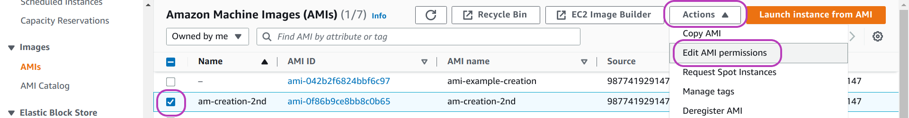

AMIs Management
Please read Workshops Organisation if you haven’t done so. To complete this episode you will need:
to have completed the previous episode: Instances Management Tasks Using the Scripts.
if you are attending a workshop using a Cloud-SPAN AWS account, you will be given the necessary information at the workshop to complete this episode.
if you are self-studying the course or attending a workshop using your AWS account, you will need:
- to have created your AWS account as described in Create Your AWS Account.
- to have configured your AWS account as described in Configure Your AWS Account.
- to have configured your terminal environment as described in either of these episodes:
- to have configured instances internet access as described in Configure Instances Internet Access.
- your base domain name.
- the AWS resource IDs of your: host zone, security group, and subnet.
- the AWS Console login details of your IAM user account: login page, username and password.
Introduction
An AWS instance is a virtual machine that runs on AWS physical computers (servers). An AWS instance is created by combining two main components: (1) a software environment, typically an operating system such as Windows, Linux or MacOS, that is configured with end-user software applications and data; and (2) a virtualised (software-emulated) hardware platform that is mainly defined by the number of processors and the amount of main memory to be made available to the operating system.
A software enviroment is called an Amazon Machine Image (AMI) in AWS terminology, and there is plenty of AMIs to choose from, offered by AWS itelf, by the AWS Marketplace, or by other AWS users in support of a community such as the Carpentries or the Cloud-SPAN teams. Some AMIs are configured to run as database servers, others as web servers, etc., either with Windows, Linux or MacOS. Virtualising hardware platforms enables AWS to run multiple instances on any physical server with enough capacity — this improves the use of physical resources and the prices that users are offered, and users can relatively easily change “hardware platform” on account of computing demand, among other benefits.
In the last episode we used the Scripts to create multiple AWS instances through specifying (in configuration files) the instances names, the id of the AMI from which to create the instances, etc. For each request to create an instance, AWS makes a copy of the specified AMI, attaches the copy to the specified “hardware platform” (we specified t3.small), and configures the copy which then becomes a proper runnable and accessible instance. The Cloud-SPAN project uses Linux Ubuntu AMIs, and hence the configuring by AWS of each AMI copy includes enabling the ubuntu user to login, through adding the public key part of the login key created to access the instance to the file /home/ubuntu/.ssh/authorized_keys in the ubuntu account. Finally, each instance is configured (by our script aws_instances_configure.sh) to enable the csuser to login, through copying that file in the ubuntu account to the file /home/csuser/.ssh/authorized_keys in the csuser account.
AMIs are created from AWS instances in three main steps: (1) creating an instance, (2) configuring the instance as required regarding software and data, and (3) requesting AWS to create an AMI from the instance — AWS copies the instance software environment into an AMI software enviroment from which other instances can be created. Steps 1 and 3 are the same for any AMI and hence are mechanical. Step 2, configuring an instance (that is) to become AMI, may be simple or rather complex depending on what software/data needs updating, and may involve design.
This episode presents the management of AMIs that we do as part of managing AWS instances with the Scripts. The first 3 sections cover the mechanical part, steps 1 and 3 above, which are rather simple once you have gone through the tasks involved. The last 3 sections cover our approach to and experience in configuring instances to become AMIs. Knowing the configuring we have done and some scripts we have developed to facilitate common configuring tasks will help you not to start from scratch.
Sections
Create an instance to become AMI
In this section you are going to create an ‘instance-to-become-AMI’ using the file-directory structure we use to manage such instances.Delete an AMI in the AWS Console
We use the AWS Console to create an AMI, to make it public or private, and to delete it. Sections 2 and 3 will guide you to perform those tasks with the AWS Console. — In case you are wondering about scripting AMIs management, yes AMIs can also be managed (created, deleted, etc.) with the AWS CLI, and hence a set of scripts (like the Scripts that manage instances) could be developed to manage AMIs. We haven’t had the need to do so, however: the AMI tasks we need to perform are rather simple in the AWS Console and only rarely needed in the Cloud-SPAN project, so far.Instances management for courses, AMIs and tests
Section 4 introduces the file-directory structure we use to manage instances to-become-AMIs. This section describes other AMI management practices we follow.When to configure an instance to become AMI
Based on our experience in configuring instances to-become-AMIs within the Cloud-SPAN project, this section presents our viewpoint as to when and how to create an AMI.Configure an instance to become AMI
This section shows our approach to update both system software and end-user software using various scripts we have developed to automate some of the tasks involved.
1. Create an ‘instance-to-become-AMI’
This section shows how to create an ‘instance-to-become-AMI’ using the file-directory structure that we use to manage such instances.
The file structure is similar to the one we use to manage courses, that is: we use a directory called amis that contains a directory for each AMI we create, and inside each such directory the inputs directory with the Scripts configuration files to create and manage an ‘instance-to-become-AMI’. And we handle our courses and amis directories at the same level as shown below:
Output
amis
ami01-theScripts-course ### course/workshop name; you can use other name
inputs ### you **cannot** use other name
instancesNames.txt ### you can use other name
resourcesIDs.txt ### you **cannot** use other name
tags.txt ### you **cannot** use other name
outputs ### created automatically by the Scripts - not to be changed
ami02-genomics-course
ami03-metagenomics-course
courses
genomics01
genomics02
metagenomics01Let’s create the directory-file structure you need to create the ‘instance-to-become-AMI’. Type or copy-paste the commands in the code box below. For convenience, our full prompt (csuser@cloud-admin-instance:~) is only shown for the first command.
Code
csuser@cloud-admin-instance:~
$ mkdir -p amis/ami01-theScripts-course/inputs
$ cp courses/instances-management/inputs/* amis/ami01-theScripts-course/inputs/
$ ls amis/ami01-theScripts-course/inputs/Output
instancesNames.txt resourcesIDs.txt tags.txtYou now need to edit the file instancesNames.txt with your text editor to:
- delete all the instances names
- enter a new single instance name
for example: instance-to-become-AMI01 - save the file
Please suffix your instance name with your name or surname to distinguish it from other participants’ instance in the AWS Console.
Then create the instance:
Code
csuser@cloud-admin-instance:~
$ csinstances_create.sh amis/ami01-theScripts-course/inputs/instancesNames.txt The instance should now be running.
2. Create an AMI and make it public in the AWS Console
Now we are going to use the AWS Console both to create an AMI from the instance you created above and to make the AMI public, that is, usable by other AWS users.
As mentioned in the introduction, you will normally create an AMI in the AWS Console after you have configured an AWS instance as required regarding software and data. We are skipping the configuration step in this section. You are not compelled to configure an instance before creating an AMI from it. You can create an AMI any time you see it necessary/useful, including learning how to do it.
This is rather useful when the configuration of an ‘instance-to-become-AMI’ is long, .., complex. You can create various intermediate AMIs at different levels of progress and roll back to any of them if needed — kind of managing multiple commits with git. If you need to roll back to an intermediate AMI, say, AMI02, you will create an AWS instance from AMI02 and that instance will become your new ‘instance-to-become-AMI’.
Login to the AWS Console with your IAM account user
Once you are logged in to the AWS Console, go to the page “EC2 - Instances” as follows:
- type EC2 in the AWS search box at the top.
- in the page that appears, “EC2 Dashboard” (not shown), click on Instances on the left menu pane.
You should now be presented with the “Instances” page, similar to the page below.
Stop the instance if it is running
Creating an AMI involves making a copy of the source instance software environment (operating system, end-user software applications and data). In order to ensure the consistency of the copy, we need to stop the instance before the copy starts.
On your “Instances” page:
- select your ‘instance-to-become-AMI’ if it is running: check the box to the left of the instance name.
we have selected “cloud-admin-instance” in the page below. - click on the drop-down menu Instance state at the top.
- click on Stop instance.
- wait for the instance state to change to Stopped.
You may have already seen a message like the one below after updating the operating system in your personal computer:
“Your computer needs to restart for changes to take effect.”
If you have updated the operating system in the ‘instance-to-become-AMI’ as part of the configuration you intend for the new AMI, then you need to reboot the instance first and then stop it before creating an AMI from it. If you don’t, if you create the AMI without rebooting the instance, then each of the instances that you create with that AMI will have to be rebooted after being launched. Hence you just delay doing it and will have it multiplied.
We always reboot an ‘instance-to-become-AMI’ even if we only update end-user software applications or data so that any state or data is flushed from main memory onto secondary storage (which is the software environment to copy). The page above shows the option to Reboot an instance.
Select the instance and the options to create an image (AMI) from it
Once your instance is stopped, do as follows (see page below):
- select your instance if it is not selected: check the box to the left of the instance name.
- click on the drop-down menu Actions at the top
- click on Image and templates
- click on Create image.

Enter a name and other info for the AMI and click on Create image
You will now be presented with the page below: “Create image”. Type a name and a description for your AMI in the first two highlighed fields from the top. The description field is optional; but it’s useful to write a brief description of the AMI configuration so you can easily recall what the AMI is about.
The highlighted option below, No reboot and its checkbox Enable, should be as shown: unchecked. Uncheck it if it is checked. By default, AWS shuts down and reboots the ‘instance-to-become-AMI’ if it is running in order to get a consistent state of the instance storage. If you check it, you Enable (both no shut down and) No reboot. And AWS cannot guarantee a consistent state for the AMI. This option is not applicable if you (reboot and) stop the instance as suggested.
The highlighted option below and to the right, Delete on termination and its checkbox Enable, should be as shown: checked. Check it if it is unchecked. This option means that, for all instances created from the AMI you are about to create, once the instances are terminated/deleted, their storage/volumes should be deleted. We want this behaviour — we don’t want to delete each such volume individually: the Scripts don’t handle deleting those volumes. On the other hand, you may find usefull to delete an instance but not its storage: you will no longer be able to stop, start and login to the instance, but you will be able to attach its storage to another (runnable) instance. We did something along these lines to reduce the size of the disk and file system of an AMI.
The value of the field Size, at the bottom of the page in the middle, is 30 GB, and is the size of the storage of the ‘instance-to-become-AMI’. The same size will be used for the storage of the AMI to be created unless you increase it. You cannot decrease it: it is assumed that the operating system inside is controlling all the storage (even if it is not) — decreasing it would corrupt the file system.
Scroll down the “Create image” page until you see the end of the page as shown below. The first highlighted option from the top, Tag image and snaphots together, should be checked. Check it if it is unchecked. Now click on Add new tag on the bottom left (we have already done so in the page below) so that two boxes will appear, titled Key and Value - optional. In the Key box, enter Name (literally), and in the Value box enter the name you entered for your AMI before, see the page below. The benefit of doing this is explained below. You can add more tags if needed.
Finally, click on Create image at the bottom right. You will be presented with the “Instances” page again, showing at the top a message like this one (our emphasis):
“Currently creating AMI ami-0f6c9742b2f6824bb from instance i-00c65a40a9d194cfc. Check that the AMI status is ‘Available’ before deleting the instance or carrying out other actions related to this AMI”.
Check your AMI and make it public or private
To check your AMI, go to the (EC2) “Amazon Machine Images (AMIs)” page: on the left menu pane, scroll down (or up) to find AMIs and click on it.
You will be presented with a page like the one below. The page below shows (in tabular form) the attributes/properties of two AMIs that we created for this section. The attribute Name (first column from left), corresponds to the value of the tag key that we suggested to add. The third attribute, AMI name, is the name of the first field in the page above where you entered the name for your AMI when your created it.
You can see in the page below that we didn’t add such a tag for the first AMI listed, so it has no value for Name, but we did add the tag for the second AMI using the same value for Name that we used for AMI name. The benefit of this tagging will be apparent when we delete the AMI below.
In the AMIs page shown above, there are quite a few more attributes for each AMI in that table on the right (scroll the table left to see other AMI attributes, there is a bar below the table to do so, not shown in the page). Other AMI attributes include:
- Visibility
- Platform (Linux, Windows, etc.)
- Creation date
- etc.
Visibility is about whether an AMI is private or public. If you create an AMI you can keep it private for your own exclusive use or make it public so that other people (outside your AWS account) can find it and use it to create instances from it. Public visibility extends to the region where the AMI was created only.
To make an AMI public or private, do as follows in the AMIs page:

- select the AMI: check the box to the left of the AMI Name
- click on the drop-down menu Actions at the top right
- click on Edit AMI permissions — in the page that appears, “Edit AMI permissions” (not shown):
- select Public or Private under the heading “AMI Availability”, then scroll down and
- click on Save changes
3. Delete an AMI in the AWS Console
Deleting an AMI is a two-fold task: deleting the AMI as such and deleting its storage — similar to deleting an instance but keeping its storage mentioned above. But there is no option in the AWS console for AMIs (as there is for instances) that you can check (turn on) so that deleting an AMI will involve deleting its storage as well. You need to delete the AMI first and then delete its storage. This behaviour gives you a second chance to recover an AMI in case you delete it by mistake.
Delete the AMI first
To delete an AMI, do as follows on the (EC2) AMIs page (see page below):
- select the AMI: check the box to the left of the AMI Name
- click on the drop-down menu Actions at the top right
- click on Deregister AMI
Once you click on Deregister, a window like the one below will pop up.

In the page above, we have clicked on Deleted associated snapshots (in the middle). Doing so displayed the message:
“Snapshots are not automatically deleted when you deregister and AMI. After you deregister the AMI, you can delete the snapshots in the Snapshots Screen[link].”
As the message states: you can delete the storage/snapshots of an AMI only after you delete/deregister the AMI. You have two options to do so. We will describe first the option we have been using.
In the option we use, in the popped up window in the page above:
- click on Deregister AMI (in orange) to confirm deletion of the AMI:
the AMIs page will be displayed again with the message “Successfully deregistered ami-042b2f6824bbf6c97.” in green at the top.
Once you click on Deregister AMI, the AMI as such will be deleted (you won’t be able to create instances from it). You now need to delete the snapshots.
Delete the storage/snapshots of the AMI (option we use)
To delete the snapshots of an AMI, go to the (EC2) “Snapshots” page: on the left menu pane, scroll down (or up) to find Snapshots and click on it. You will then be presented with a page like the one below.
Do as follows on this page:
- select the snapshot/s to delete: check the box to the left of the snapshot Name.
- click on the drop-down menu Actions at the top right
- click on Delete snapshot

That’s it. You have deleted the AMI in its entirety.
In this option to delete the snapshots of an AMI, note that we rely on the tagging we suggested to add in the instructions to create an AMI. That is:
- selecting the option Tag image and snapshots together and
- adding a Tag with the Key Name and Value your-AMI-name
In the page above, the snapshot with no Name (the second one of those checked) is the snapshot attached to the AMI for which we did not specify that tag. With no such tags, you will need to somehow ensure that you are deleting the right snapshot, by looking at the details of the target AMI to get the IDs of the attached snapshots.
Delete the storage/snapshots of the AMI (other option)
Alternatively, you can delete the snaphots of an AMI as follows. In the page with the window that pops up after you clicked on Deregister AMI for the first time (shown below again), do as follows:
- click on Snapshots screen (in blue) before clicking on Deregister AMI.
This will open the “Snapshots” page in a new browser tab, listing only the snapshots attached to the AMI/s you previously selected to deregister — hence you don’t need the Names of the relevant AMI to identify the snapshots. - click on Deregister AMI — you need to deregister the AMI before deleting the snapshots.
- in the “Snapshots” page in the new browser tab
- select the snapshots to delete
- click on Actions at the top of the page
- click on Delete snaphot
4. Instances Management for Courses, AMIs and Tests
Section 1 introduced the file-directory structure we use to manage instances for courses and for AMIs, in the directories courses and amis.
We also handle instances for tests similary, that is: using a directory called tests that contains a directory for each test we perform, and inside each such directory the inputs directory with the Scripts configuration files to create and manage the instance/s used in the test. A test may involve trying a new domain name configuration, trying the configurability of intance types (virtualised hardware platforms), for example, t2.small vs t3.small, etc. The results of a test may or may not be incorporated into an AMI.
Our working directory to run the Scripts
The tests directory is located at the same level as the directories courses and amis. Our actual working directory where we run the Scripts (in our Linux machine) looks like this:
Code
jorge@wine:~/software/york/cloud-SPAN/aws-instances
$ lsOutput
amis courses tests the-ScriptsAnd we run the Scripts specifying:
- either
amisorcoursesortests. - one or more intermediate directories (before the
inputsdirectory where the configuration files instancesNames.txt,resourcesIDs.txtandtags.txtreside). - the
inputsdirectory. - the target instancesNames.txt file.
Examples:
Code
jorge@wine:~/software/york/cloud-SPAN/aws-instances
$ csinstances_create.sh amis/ami09-metagenomics-instance/metagenomicsT3instance/inputs/instancesNames01.txt
$ csinstances_create.sh courses/genomics20221206-7/inputs/instancesNames.txt
$ csinstances_create.sh tests/t003-cloud-admin-course-instance-UoYacc20221107/inputs/instancesNames-cloud-admin-instance.txtThe file-directory structure is rather flexible. We are only bound to specify first (the type of the target instances through the name of the directory) amis or courses or tests, and down the path the inputs directory just before the target instancesNames.txt whose name we can choose according to need.
The path in the first example has two intermediate directories while the two other examples have only one (as in all the code examples we showed before). In the first example, we started the configuration of the meteganomics ‘instance-to-become-AMI’ using the AWS instance type t2.medium which we inherited from the Data Carpentries AMI. Instance type t2 cannot scale as much as we needed to, while instance type t3 can. So we changed to type t3 which involve creating a new temporary AMI and we decided to handle it on a new intermediate directory called metagenomicsT3instance under ami09-metagenomics-instance. We could also have handled it as ami09-metagenomics-T3instance under amis.
Instances names we use
The actual names we use when creating instances are suffixed with the name of the AMI template from which the instances are created. You don’t need to follow this naming convention but it is helpful under some circumstances.
It was helpful for us in the beginning, when we had to add some functionality/configuration into a new AMI relatively frequently until our AMIs got “stable” — meanwhile we had instances running that were created from different AMI templates. Anyway, we needed displayed in the AWS Console the name of the source AMI of each instance. So instances names in our instancesNames.txt files have this form:
Output
instance306-srcCS-AMI09-MetaGen
cloud-admin-instance-srcCS-AMI08
metagenomics-instance001-srcCS-AMI09-MetaGen
metagenomics-Joao-srcCS-AMI09-MetaGenThe instance name proper, the one that is used for the instance domain name and hostname of each instance, is the substring from the beginning of each line up to before the substring -src (for source AMI name). After src you can add the name of your AMI. The Scripts extract the instance proper name to configure the instance domain name and host name within each instance. But use the whole name as the value for the instance tag Name which is displayed in the AWS Console, as shown below:

We can handle the name of the source AMI as part of the instance name but then it will appear in both the instance domain name and the host domain name and this would be distracting to end users.
As mentioned above, you don’t need to suffix your instances names but obviously you should not use the substring -src anywhere in an instance name unless you intend to add the source AMI name as we do. You can also edit the Scripts to get rid of that suffix handling.
The list of instances names in the output box above is not meant to be the contents of an actual “instancesNames.txt” file that can be used to create/manage instances with the Scripts. The Scripts cannot create instances using two or more AMI templates — but only one.
We currently manage three AMIs. One AMI for the Cloud-SPAN Prenomics and Genomics courses. Two AMIs for two versions of the Metagenomics course that differ in the ’omics data that is analysed. When we run each course we only need to create instances from one AMI template. But we also run Code Retreats in person with students of the three courses and we launch instances of type Genomics and Metagenomics.
How would you manage the instances for such a code retreat within the courses directory?
5. When to configure an ‘instance-to-become-AMI’
This section presents some of our experince in configuring ’instance-to-become-AMI’s — the second step of the three main steps to create an AMI mentioned earlier:
- creating an instance (Section 1)
- configuring the instance as required regarding software and data, and
- requesting AWS to create an AMI from the instance (Section 2)
We use in this section the term “creating an AMI” to mean both “configuring an ‘instance-to-become-AMI’” and “creating an AMI from that instance in the AWS Console”.
Requirements for which we have created a new AMI
- updating software or data
- reducing the storage size
- increasing the storage size
- changing AWS configuration
Updating software or data
Updating software or data or both is the obvious reason to create a new AMI — it literally means any change in software or data, including:
- updating or upgrading the operating system
- updating any other software:
- end-user software applications to be used in a course
- admin software (scripts) that you (as instances manager) need installed in each instance, for example, the Scripts that activate the csuser account in each instance, as outlined in the previous episode.
- updating data for a course
It is not convenient and we find it unmanageable to create a new AMI every time any item in that list changes. The items that do require creating a new AMI straight away are updating data for a course and sometimes updating admin scripts that you need installed in each instance (to be created from the AMI). In our experience all other items can wait, should be assessed, and when possible combined into a new AMI.
Updating data
Updating data requires a new AMI because the data to be updated/added is the subject of (will be processed and analysed in) a course, or you may need to delete some data because it is too big, no longer needed, or you need space in the AMI for something else.
But wait, would it not be better to update the data on each instance (created from a currently used AMI) using some new scripts? And thus avoid creating a new AMI.
If the data is relatively big, it is much better to update the data only once, in the new AMI, rather than mutilple times in each of the instances because the entire process of creating and preparing the instances will take much longer. Also, the new scripts to update the data may be complex and ad hoc for each data update, at least in the beginning — until you identify some pattern that enables you to configure the scripts and data transfers in a generic way.
If the data is relatively small, the scripts point regarding complexity may still apply. It will be more complex to design the new scripts to update data in each instance than just updating the data in the new AMI only once.
If you decide to design new scripts to update data in multiple instances (as opposed to creating a new AMI), you should not invoke the new scripts within the Scripts. Run the Scripts first to create the instances, and then run the new scripts that update data.
Updating admin scripts
Updating admin scripts that you need installed in each instance may, or may not, require creating a new AMI straight away.
Scenario that required creating a new AMI straight away
The first AMI we created was a copy of the Genomics Data Carpentry AMI. Instances created from the Data Carpentry AMI are also accessed with ssh but using an IP address and a password for the dcuser, which password is the same for all instances. For the Cloud-SPAN instances, we decided to use domain names (instead of IP addresses) and no password for the Cloud-SPAN csuser but an encrypted login key file for each instance. This required, among other things, to create and upload into the Cloud-SPAN AMI a few scripts into the ubuntu user account, in the /home/ubuntu/bin directory. These scripts make the ubuntu user share, with the csuser, the public key part of the login key created to access an instance (injected by AWS in /home/ubuntu/.ssh/authorized_keys), so that both users can use the same login key file created for each instance. Each instance created from the first Cloud-SPAN AMI has those scripts which are invoked by the script aws_instances_configure.sh as part of the configuring of each instance.
You can only use the Scripts with Cloud-SPAN AMIs:
Because of that “login key” and “domain name” configuration to access Cloud-SPAN instances, the Scripts can only be used with a Cloud-SPAN AMI as the template from which to create instances.
If you want to use the Scripts and that configuration is OK with you, you can still create your own AMI by configuring end-user software applications and data.
If you want to use the Scripts but change that configuration (for example, you want to use IP addresses or not using a login key for the csuser, etc.), you will need to change both the AMI configuration and change the script aws_instances_configure.sh accordingly. {.callout}
Scenario that did not require creating a new AMI straight away
The instances for the Cloud-SPAN Metagenomics courses have each 240GB of secondary storage. The input data that is analysed during the course is about 17GB, but the output data produced from various analyses grows over 100GB. Before the analyses, the input data, the operating system and the metagenomics software applications require less than 50 GB.
Hence, we could have created an AMI of about 50GB and, on creating each instance for the course, increase the storage size of each instance to 240GB after the configuration step of each instance by aws_instances_configure.sh. Instead we created the Metagenomics AMIs of size 240GB.
The main reason for that decision was that we ran out of time to design and test the scripts to increase storage. It was safer to have the AMI with 240GB ready and hence the instances also ready once created.
Updating the operating system and end-user software
We have only upgraded the Linux operating system only once. The Data Carpentries AMI from which we created the first Cloud-SPAN AMI was configured with Linux Ubuntu 16.04. The Cloud-SPAN Genomics and Metagenomics AMIs are version 20.04. We don’t see the need to upgrade them to the stable version 22.04 yet.
Likewise we have only updated the end-user software applications in each AMI only once, when we upgraded the Linux operating system from the Data Carpentry version.
There is no need to update the system or end-user software unless changes to the corresponding courses justify updating the software, something like: somebody has used a more recent version of a software application and has changed the course materials with more accurate results or another way of using the application, etc.
Whenever possible, install end-user software locally in the csuser account, either in /home/csuser/bin or other local directory. You will have more control as to what to delete in order to configure and create a new AMI.
Reducing storage size
Reducing storage size is complex, and we cannot see a way to automate it yet. We have done it a few times and hopefully won’t do it again in the context of the Cloud-SPAN project — you may not either.
We decided to reduce the size of the Cloud-SPAN AMI for the Prenomics and Genomics courses for two reasons. Those courses don’t require instances bigger than 30GB, and 30GB is the instance size limit in the AWS Free Tier. Thus, Cloud-SPAN students can create their own Genomics instance without paying for one year as described in the Cloud-SPAN course Create Your Own AWS Instance.
As mentioned earlier, the first AMI we created was a copy of the Data Carpentries AMI, which was 120GB. We reduced it to 30GB following the instructions in How To Shrink Amazon EBS Volumes (Root Or Non-Root) — this site has unfortunately been unavailable some times since we used it — google its title for some options.
We followed those instructions for storage volumes called /dev/xvda and /dev/xvda1 which are used in instances of type t2. Cloud-SPAN AMIs are now type t3 whose storage volumes are called /dev/nvme0n1 1 and /dev/nvme0n1p1.
Hopefully you won’t need to reduce storage below 30GB.
Increasing storage size
Increasing storage size is rather simple and efficient in AWS.
We had to increase storage size for the Cloud-SPAN Metagenomics course instances, up to 240GB, for the reasons already mentioned above. Starting with the Cloud-SPAN AMI for the Genomics course (30GB), we created an instance into which we uploaded a script (into the ubuntu account ~/bin directory) that increases storage size, and then created a new AMI. All the instances created from this AMI can run that script to increase the storage size dynamically, that is, without having to log out from the instance. The script is called aws_storageEBS_increase.sh. Its output when run with no parameters is shown below:
Code
ubuntu@cloud-admin-instance.cloud-span.aws.york.ac.uk:~ $ aws_storageEBS_increase.sh Output
aws_storageEBS_increase.sh increases the size of the instance disk (EBS storage and the file system)
up to the given number of GigaBytes (GB) if such number is larger than the current size of the disk.
usage:
aws_storageEBS_increase.sh newSizeOfDiskInGBs
Example: aws_storageEBS_increase.sh 120
- increases the size of the disk and file system to be of 120 GB.
- the current disk size must be smaller than 120 GB
- note that the file system size may be shown as slightly smaller than disk space:
try command: "df -h ."Back to the development of the Cloud-SPAN Metagenomics AMI, after we created the AMI with the script aws_storageEBS_increase.sh inside, we created an instance, logged into the instance, ran that script to increase the size up to 240GB, configured the metagenomics software and data, and then created the Metagenomics AMI.
That means, how would you?
- create Metagenomics instances using an AMI 50GB big, and then
- increase the size of each instance to 240GB running the script
aws_storageEBS_increase.shin each instance after the instance is created.
You will hopefully only need to increase storage size (and not decrease it)
The size of the Cloud-SPAN Genomics AMI and instances is 30GB. Small enough to be in the AWS Free Tier. Hopefully you will only need to increase its size as outlined above and not to decrease it.
That is, should you need to create a new AMI, you should start with the Cloud-SPAN Genomics AMI, the one you used to create instances with the Scripts in the previous episode, as you will have the option to increase its size easily. However, all depends on your needs, see the last section “Put it all together: …”.
Changing AWS configuration
The Cloud-SPAN Metagenomics AMI not only required more storage than the Genomics AMI but also more main memory and more processors which, you will remember, are aspects of the (virtualised) “hardware platform” (not of the software enviroment wich comprises the storage).
We were using “hardware platforms” of type t2 (following the Data Carpentries use): t2.small, t2.medium t2.large, etc. For the Metagenomics AMI, at some point we needed to use a larger instance type, r5.4xlarge, but we couldn’t. We got a message saying that type t2 was incompatible with the type of internet access required by type r5.4xlarge, something called Elastic Network Adapter (ENA).
Type t3 instances are ENA compatible, have similar sizes to type t2 (small, medium, etc.), and can use type r5.4xlarge and others. So we change to type t3, meaning that the Cloud-SPAN Genomics and Metagenomics AMIs are type t3 and hence, instances created from them are type t3 as well.
You can create t2 instances from a t3 AMI, as follows: in the resourcesIDs.txt file you would use t2.small (or other t2 type) as the instance type but use a type t3 AMI template such as the Cloud-SPAN AMI you used in the previous episode. The opposite doesn’t hold: you cannot create t3 instances from a t2 AMI — you will be able to create instances but you won’t be able to login.
Again: should you need to create a new AMI, you should start with the Cloud-SPAN Genomics AMI, the one you used to create instances with the Scripts in the previous episode. It will enable you to increase the storage size of offspring instances dynamically, and being t3 type you can run offspring instances on more instance types.
By the way, you can change the instance type of an instance in the AWS Console as follows. Go to the EC2 - Instances page and select the instance, check the checkbox to the left of the instance name, then:
- stop the instance: click on Instance state at the top and then on Stop instance
- wait for the instance state to change to Stopped
- change the instance type: click on Actions at the top, then on Instance settings, and then on Change instance type. A new page will appear where you will be able to change the instance type — save the changes
- restart the instance.
6. Configure an instance to become AMI
THIS section presents our approach to configure an instance to become AMI including:
6.1. Updating system software
6.2. Changing the end-user username
6.3. Updating end-user software applications
6.4. Increasing storage size
6.5. Before creating your AMI: last trimmings and deleting all login keys
Our approach uses a few scripts that we developed to automate some of the tasks of installing and updating software. The scripts organisation is such that steps 6.1, 6.2 and 6.3 must be performed in that order, but you can omit step 6.2 if you don’t need to change the Cloud-SPAN csuser to a username of your choice. Step 6.4, increasing storage size, is performed by simply running the Bash script aws_storageEBS_increase.sh (EBS: Elastic Block Storage), either before or after or in-between the other steps — but you must wait 24 hours since the last run of the script to run it again.
Steps 6.1 to 6.5 are presented using an instance (to become AMI) created from the Cloud-SPAN Genomics AMI which is relatively small: 30 GigaBytes (GB). If you use this AMI as starting point to configure your own AMIs, you are more likely to only need to increase storage size — which is good, as reducing storage size is rather complex. At the end of those steps you will have a new Genomics AMI with (1) an updated Ubuntu Linux, (2) your new end-user username (instead of the Cloud-SPAN csuser), (3) updated end-user software applications (newer versions of the Genomics applications already installed), and (4) increased secondary storage.
As you are likely to face configuring an ‘instance-to-become-AMI’ that requires other (end-user) software applications, we will discuss how to update our scripts so that you can automatically install other software applications or delete others in configuring your own AMI. Please click on the bar below for some background to our approach.
The Cloud-SPAN project currently manages the Genomics AMI and two Metagenomics AMIs to create instances for four different workshops. Click on the bar below to see the workshops, AMIs, and instance types used in each workshop.
| Workshop | Cloud-SPAN AMI | Intance type — costs as at May 2023 |
|---|---|---|
| Prenomics | Genomics AMI: 30 GB secondary storage — AWS Free tier is 30 GB-month for 1 year | t3.small: US $0.0208/hour, 2 processors, 2GB main memory |
| Genomics | Genomics AMI | t3.small |
| Metagenomics | Metagenomics AMI with Benchmarking data: 240 GB secondary storage | t3.2xlarge: US $0.3648/hour, 8 processors, 32 GB main memory |
| Metagenomics for Environmental Scientists | Metagenomics AMI with Environmental data: 240 GB secondary storage | t3.2xlarge |
We have created about 10 versions of the Genomics AMI: updating software, increasing storage size, reducing storage size, etc. The first version was created from the Data Carpentry Genomics AMI, updating Linux Ubuntu from version 16.04 to 20.04, and eventually reducing secondary storage from 120 GB to 30 GB.
All Genomics AMIs except the last one were created manually, typing all of the commands needed to update software, etc. We currently manage 3 Genomics AMIs whose configuration is as shown in the bar below.
The three Cloud-SPAN Genomics AMIs are all of size 30 GB and configured with the same ’omics data. Their software configuration is shown in the table below. We currently use CS-AMI08b as the template to create instaces for the Prenomics and Genomics workshops.
The difference between CS-AMI08a and CS-AMI08b is that the latter has the Scripts installed, the emacs configuration is visually more user-frienly, and the terminal prompt uses two lines showing the dollar sign in a new line on its own. CS-AMI08c was created to try out the two scripts that update system software and end-user software applications. How to use these scripts is shown later in this section.
CS-AMI08a CS-AMI08b |
CS-AMI08c |
||
|---|---|---|---|
| SOFTWARE | VERSION | VERSION | DESCRIPTION |
| Linux Ubuntu | 20.04.4 LTS | 20.04.6 LTS | |
| bcftools | 1.14-3 | 1.19-18-ge344ee2c | Utilities for variant calling and manipulating VCFs and BCFs. |
| bwa | 0.7.17-r1188 | 0.7.17-r1188 | Mapping DNA sequences against reference genome. |
| cutadapt | 3.5 | 4.6 | Similar to bcftools |
| fastqc | 0.11.9 | 0.12.1 | Quality control tool for high throughput sequence data. |
| samtools | 1.13 | 1.19-3-g62195d3 | Visualization and interactive exploration of large genomics datasets. |
| trimmomatic | 0.39 | 0.39 | A flexible read trimming tool for Illumina NGS data. |
The two Metagenomics AMIs have the same software configuration but different data. The first Metagenomics AMI we created is configured with benchmarking data. We first tried to create it manually but, after two attempts, we saw the need to devise some scripts to automate the installing of both system software and end-user software applications. The second Metagenomics AMI is configured with environmental data. It was created from the first Metagenomics AMI: we made a copy of the first one and then and expert in Metagenomics change the data. The end-user software applications of both Metagenomics AMIs include about 25 applications that you are listed in the bar below.
Both Cloud-SPAN Metagenomics AMIs are of size 240 GB and configured with Linux Ubuntu 20.04.5 and the ’omics software analysis tools below, but are configured with different data.
| SOFTWARE | VERSION | DESCRIPTION |
|---|---|---|
| bwa | 0.7.17-r1188 | mapping DNA sequences against reference genome. |
| checkm | 1.2.1 | set of tools for assessing the quality of genomes recovered from isolates, single cells, or metagenomes. |
| fastqc | 0.11.9 | quality control tool for high throughput sequence data. |
| flye | 2.9.1-b1780 | assembler for single molecule sequencing reads, such as those produced by PacBio and Oxford Nanopore Technologies |
| kraken | 2.1.2 | a system for assigning taxonomic labels to short DNA sequences, usually obtained through metagenomic studies |
| kraken-biom | 1.0.1 | creates BIOM-format tables |
| medaka | 1.7.2 | a tool to create a consensus sequence from nanopore sequencing data |
| metabat2 | 2:2.15 | binning tool to reconstruct single genomes from metagenome assemblies |
| metaquast | 5.2.0 | evaluates and compares metagenome assemblies based on alignments to close references |
| nanoplot | 1.40.2 | plotting tool for long read sequencing data and alignments |
| pilon | 1.24 | integrated software tool for comprehensive microbial genome assembly improvement and variant detection |
| prokka | 1.14.5 | software tool to annotate bacterial, archaeal and viral genomes quickly and produce standards-compliant output files |
| samtools | 1.16.1-33 | Visualization and interactive exploration of large genomics datasets |
| seqkit | 2.3.0 | a cross-platform and ultrafast toolkit for FASTA/Q file manipulation |
Manually creating the first Metagenomics AMI was rather cumbersome because many of the applications to install required that some system libraries were first installed, or the applications had to be the latest version, or had to be installed in the end-user account (csuser) and not at system level, etc. Some applications required that other applications were first installed.
The requirement that some system libraries were first installed, meant that we first updated the system and then install the libraries with the ubuntu user (account), which has admin privileges, and then install the relevant application in the csuser account (it is rather convenient to install applications locally in the csuser account as you have full control as to where to install them and hence to remove them). So we were switching between these user accounts for each application that required system libraries installed, entering again all the commans for the applications that had already been successfully installed and then start trying to install the next application. Just unmanageable!
Thus we thought of two scripts to automate the installing. One script, run by the ubuntu user, would update the system first, then install all the system libraries required by the applications so far successfully installed, and finally update the system again. The other script, run by the csuser, would install all the applications so far successfully installed, etc. Once we had run the scripts, we would attempt to install the next application, updating the scripts accordingly, sometimes creating an intermediate AMI before continuing installing applications so we could roll back if we encounter difficult problems.
These are the scripts we have created in the order we created them:
softwareInstall_metagen_ubuntu1v.shsoftwareInstall_metagen_csuser1v.shsoftwareInstall_metagen_ubuntu2v.ssoftwareInstall_metagen_csuser2v.shsoftwareInstall_genomics_ubuntusr.shsoftwareInstall_genomics_csuser.sh
You are to run these scripts in pairs, on an ‘instance-to-become-AMI’ created from the Genomics AMI CS-AMI08b, where all those scripts are installed along with the Scripts you used in the last episode to create and manage instances.
Only the last two scripts, softwareInstall_genomics_ubuntusr.sh and softwareInstall_genomics_csuser.sh, once you run them as described later in this section, will get you a new Genomics AMI with the latest versions of the Genomics applications installed.
The scripts softwareInstall_metagen*.sh, both versions 1v and 2v, will run successfully but will not get you a Metagenomics AMI with the proper configuration because such configuration involved a few experts in Metagenomics whose work is not incorporated in the scripts. The first Metagenomics AMI was created as follows. Once we successfully ran the first versions 1v of the scripts, we handed in an instance to the experts in Metagenomics who designed and were in charge of delivering the corresponding course. They configured some applications further to use some specific databases which they also installed. The instance size was increased up to 500 GB, among other tuning and network configuration. Once the experts were happy with the instance configuration, the instance was given back to us with the requirements that the AMI should be of size 240 GB and some applications should be removed as they were no longer needed — they were only needed to generate some data. The 2v versions of the scripts do not install these applications. After we handed in a new instance with the “final” configuration, while running some applications, it was realised that more changes were needed. These were the last changes. We then created the first Metagenomics AMI, and from this the second Metagenomics AMI whose data was also configured by another expert in Metagenomics.
Create and login to your ‘instance-to-become-AMI’ that you will configure
To create your ‘instance-to-become-AMI’, first create the file-directory structure as you did above in Section 1, that is: within the amis directory, create a new ami directory, and inside the inputs directory with the Scripts configuration files — you can use the commands below (where our new ami directory is ami02-myFirstAMIConfig and you are assumed to be in your home directory ~ — you can choose another name but you won’t be able to copy-paste the code below):
Code
csuser@cloud-span-admin-instance:~
$ mkdir -p amis/ami02-myFirstAMIConfig/inputs
$ cp courses/instances-management/inputs/* amis/ami02-myFirstAMIConfig/inputs/
$ ls amis/ami02-myFirstAMIConfig/inputs
instancesNames.txt resourcesIDs.txt tags.txtNow you need to edit the file instancesNames.txt to have only the name of your ‘instance-to-become-AMI’. The name of our instance is: instanceToBecomeAMI02-Jorge-srcCS-AMI08b.
If you are attending a workshop using a Cloud-SPAN AWS account, please use a similar name but change “Jorge” for your name or surname so your instance can be distinguished from other participants’ instance in our AWS Console.
Create your ‘instance-to-become-AMI’:
Code
csuser@cloud-span-admin-instance:~
$ csinstances_create.sh amis/ami02-myFirstAMIConfig/inputs/instancesNames.txt Wait a 2-3 minutes .. then:
Login to your ‘instance-to-become-AMI’ using the Cloud-SPAN script lginstance.sh as shown in the code below, passing as parameters (1) the path of the login key file of your instance and (2) ubuntu as the username to login:
Code
csuser@cloud-span-admin-instance:~
$ lginstance.sh amis/ami02-myFirstAMIConfig/outputs/login-keys/login-key-instanceToBecomeAMI02-Jorge.pem ubuntulginstance.sh works:
lginstance.sh was installed along with the Scripts on your computer — it is already installed on your AWS instance if you are attending a workshop using a Cloud-SPAN AWS account. Run lginstance.sh with no parameters to see its usage message.
Code
$ lginstance.shOutput
lginstance.sh logs you in to an (AWS) instance using ssh.
usage:
lginstance.sh login-key-instanceName.pem csuser/ubuntu/yourusername
- login-key-instanceName.pem is the name (path) of the file containing the RSA login key
to access the instance.
- the name of the instance to log you in is extracted from the name of the .pem file provided.
- the domain name is extracted from the inputs/resourcesIDs.txt file.
- Examples:
lginstance.sh courses/genomics01/outputs/login-keys/login-key-instance017.pem csuser
lginstance.sh courses/genomics01/outputs/login-keys/login-key-instance017.pem ubuntuUse the Tab key to complete lginstance.sh and the file path of the login key — but you need to type the username in full.
For the command below you only need to type: “lgTabaTab``Tab2TaboTablTab/TabubuntuEnter”:
Code
$ lginstance.sh amis/ami02-myFirstRealAMI/outputs/login-keys/login-key-instanceToBecomeAMI02-Jorge.pem ubuntu
lgTab aTabTab 2Tab oTab lTab /Tab ubuntuEnterOnce you are logged in, you will see the Cloud-SPAN welcome message and your terminal prompt will have changed to something like this:
Code
ubuntu@instanceToBecomeAMI02-Jorge.cloud-span.aws.york.ac.uk:~
$ The prompt of the ubuntu user is configured to show the entire instance domain name, while the prompt of the csuser to show only the instance name.
If you are attending a workshop using a Cloud-SPAN AWS account and an AWS instance, then you just have used the program ssh twice in a chain: to login from your personal computer to your workshop-assigned instance, and from the latter to your ‘instance-to-become-AMI’.
6.1 Updating system software
The Linux version installed in the ‘instance-to-become-AMI’ that you are about to configure is Ubuntu 20.04.4 LTS. LTS stands for Long Term Support version. “Updating system software” for an LTS version can mean either updating the LTS version with bugs and security patches (that address errors or security vulnerabilities), or updating the LTS version to the next LTS version if available, or both. We will use the term “updating system software” for the first meaning, and the term “updating to the next LTS” for the second meaning.
We are going to do the following:
- updating to the next LTS typing each of the commands typically used to update any Ubuntu version to the next LTS, see the bar “Ubuntu LTS versions” below
- updating system software running our script
softwareInstall_genomics_ubuntusr.sh, which performs typical “updating system software” in addition to installing the system libraries required by the Genomics end-user software applications already installed in the ‘instance-to-become-AMI’. Updating system software (withsoftwareInstall_genomics_ubuntusr.sh) can be performed without updating to the next LTS — we have tried this out only with the Genomics AMI. - discussing the way to installing and removing end-user software applications - first part, which must be performed with the
ubuntuuser — a second part, which must be performed with thecsuseror the new user you create (in step 6.2), is discussed in step 6.3 “Updating end-user software applications”.
LTS versions provide users with software stability for a relatively long period. LTS versions are released every two years on April and receive support through security and bugs patches for up to five years or more — you may be interested in the following:
Updating LTS versions is explained in How To Upgrade to Ubuntu 22.04 Jammy Jellyfish
Updating to the next LTS
You are logged in as the ubuntu user on your ‘instance-to-become-AMI’. You will enter the following commands one by one: - sudo apt-get update - apt-get upgrade -y - sudo apt-get dist-upgrade - sudo apt autoremove - sudo do-release-upgrade
Some of these commands print a lot of output as they run. We will only show the most relevant output within a drop-down bar labelled: “Output — command”. We have added comments to some output and commands, like this one: ### comment on output/command. You still can copy-paste the commands as the comments will be ignored by the shell.
The first command, sudo apt-get update, updates the list of installed packages with new updates for each package if any. Enter the command and wait until the prompt appears again to enter the next command.
Code
ubuntu@instanceToBecomeAMI02-Jorge.cloud-span.aws.york.ac.uk:~
$ sudo apt-get update ### updates packages list of installed packagesOutput
ubuntu@instanceToBecomeAMI02-Jorge.cloud-span.aws.york.ac.uk:~
$ sudo apt-get update ### updates packages list of installed packages
Hit:1 http://eu-west-1.ec2.archive.ubuntu.com/ubuntu focal InRelease
Hit:2 http://eu-west-1.ec2.archive.ubuntu.com/ubuntu focal-updates InRelease
Hit:3 http://eu-west-1.ec2.archive.ubuntu.com/ubuntu focal-backports InRelease
Get:4 https://esm.ubuntu.com/infra/ubuntu focal-infra-security InRelease [7,450 B]
Get:5 https://esm.ubuntu.com/infra/ubuntu focal-infra-updates InRelease [7,449 B]
Get:6 http://security.ubuntu.com/ubuntu focal-security InRelease [114 kB]
...
Fetched 129 kB in 3s (44.4 kB/s)
Reading package lists... Done
ubuntu@instanceToBecomeAMI-Jorge.cloud-span.aws.york.ac.uk:~
$The second command, sudo apt-get upgrade -y, applies the updates: upgrades the packages. The option -y stands for yes to any question regarding applying the udpates, so you don’t have to enter y and Enter to each question; the upgrade just runs to the end. This command may take over 5 minutes to complete.
Code
ubuntu@instanceToBecomeAMI02-Jorge.cloud-span.aws.york.ac.uk:~
$ sudo apt-get upgrade -y ### applies updates: upgrades the installed packagesOutput
ubuntu@instanceToBecomeAMI02-Jorge.cloud-span.aws.york.ac.uk:~
$ sudo apt-get upgrade -y ### applies updates: upgrades the installed packages
Reading package lists... Done
Building dependency tree
Reading state information... Done
Calculating upgrade... Done
..
The following packages have been kept back:
fwupd libfwupd2 libfwupdplugin5 linux-generic linux-headers-generic linux-headers-virtual linux-image-generic
linux-image-virtual linux-virtual python3-software-properties software-properties-common software-properties-gtk
ubuntu-advantage-tools
The following packages will be upgraded:
accountsservice amd64-microcode apache2-bin apparmor apport apport-gtk apt apt-transport-https apt-utils
... ### loads of output
Processing triggers for libgdk-pixbuf2.0-0:amd64 (2.40.0+dfsg-3ubuntu0.4) ...
Processing triggers for dbus (1.12.16-2ubuntu2.3) ...
Processing triggers for initramfs-tools (0.136ubuntu6.7) ...
update-initramfs: Generating /boot/initrd.img-5.4.0-109-generic
Processing triggers for libc-bin (2.31-0ubuntu9.14) ...
ubuntu@instanceToBecomeAMI-Jorge.cloud-span.aws.york.ac.uk:~
$The third command, sudo apt-get dist-upgrade, performs “any additional upgrades that involve changing dependencies, adding or removing new packages as necessary. This will handle a set of upgrades which may have been held back by the previous apt upgrade step”.
Code
ubuntu@instanceToBecomeAMI02-Jorge.cloud-span.aws.york.ac.uk:~
$ sudo apt-get dist-upgradeOutput
ubuntu@instanceToBecomeAMI02-Jorge.cloud-span.aws.york.ac.uk:~
$ sudo apt-get dist-upgrade
Reading package lists... Done
...
The following packages were automatically installed and are no longer required:
gir1.2-goa-1.0 libxmlb1
Use 'sudo apt autoremove' to remove them. ### this is the reason for the fourth command
Ubuntu comes with ABSOLUTELY NO WARRANTY, to the extent permitted by
applicable law.
The following NEW packages will be installed:
libxmlb2 linux-headers-5.4.0-169 linux-headers-5.4.0-169-generic linux-image-5.4.0-169-generic
...
The following packages will be upgraded:
fwupd libfwupd2 libfwupdplugin5 linux-generic linux-headers-generic linux-headers-virtual linux-image-generic
linux-image-virtual linux-virtual python3-software-properties software-properties-common software-properties-gtk
ubuntu-advantage-tools
13 upgraded, 8 newly installed, 0 to remove and 0 not upgraded.
6 standard security updates
Need to get 80.2 MB of archives.
After this operation, 379 MB of additional disk space will be used.
Do you want to continue? [Y/n] ### type y and press Enter
Get:1 http://eu-west-1.ec2.archive.ubuntu.com/ubuntu focal-updates/main amd64 ubuntu-advantage-tools amd64 30~20.04 [203 kB]
...
Found memtest86+ image: /boot/memtest86+.elf
Found memtest86+ image: /boot/memtest86+.bin
done
ubuntu@instanceToBecomeAMI02-Jorge.cloud-span.aws.york.ac.uk:~
$The fourth command, sudo apt autoremove, removes packages no longer used.
Code
ubuntu@instanceToBecomeAMI02-Jorge.cloud-span.aws.york.ac.uk:~
$ sudo apt autoremoveOutput
ubuntu@instanceToBecomeAMI02-Jorge.cloud-span.aws.york.ac.uk:~
$ sudo apt autoremove
Reading package lists... Done
..
The following packages will be REMOVED:
gir1.2-goa-1.0 libxmlb1 linux-headers-5.4.0-104 linux-headers-5.4.0-104-generic linux-image-5.4.0-104-generic
linux-modules-5.4.0-104-generic linux-modules-extra-5.4.0-104-generic
0 upgraded, 0 newly installed, 7 to remove and 0 not upgraded.
After this operation, 380 MB disk space will be freed.
Do you want to continue? [Y/n] ### type y and press Enter
(Reading database ... 267814 files and directories currently installed.)
Removing gir1.2-goa-1.0:amd64 (3.36.1-0ubuntu1) ...
Removing libxmlb1:amd64 (0.1.15-2ubuntu1~20.04.1) ...
...
Progress: [ 67%] [###############################################################................................]
...
done
Removing linux-modules-5.4.0-104-generic (5.4.0-104.118) ...
Processing triggers for libc-bin (2.31-0ubuntu9.14) ...
ubuntu@instanceToBecomeAMI-Jorge.cloud-span.aws.york.ac.uk:~
$The fifth command, sudo do-release-upgrade, carries out the actual update to the next LTS release (version). But before entering the command, you need to reboot the system as otherwise you will receive the message: “You have not rebooted after updating a package which requires a reboot. Please reboot before upgrading.”
To reboot the system, enter the command sudo shutdown --reboot now, see the bar below. After 2 minutes login again with lginstance.sh ... ubuntu (press the UP arrow key to recall the command from the terminal history).
Code
ubuntu@instanceToBecomeAMI02-Jorge.cloud-span.aws.york.ac.uk:~
$ sudo shutdown --reboot nowOnce you have entered the shutdown command you are going to see output below. Ignore the ERROR message. It pops up when the ssh connection is aborted out of shooting down the system as opposed to ending the connection normally — lginstance.sh checks that a connection ends normally and if it doesn’t, displays the error below and its usage message.
Output
$ Connection to instancetobecomeami02-jorge.cloud-span.aws.york.ac.uk closed by remote host.
Connection to instancetobecomeami02-jorge.cloud-span.aws.york.ac.uk closed.
ERROR: could not login, check the username ubuntu is correct - try with "ubuntu" (with no quotes).
----------------------------------------------
lginstance.sh logs you in to an (AWS) instance using ssh.
usage:
lginstance.sh login-key-instanceName.pem csuser/ubuntu/yourusername
- login-key-instanceName.pem is the name (path) of the file containing the RSA login key
to access the instance.
- the name of the instance to log you in is extracted from the name of the .pem file provided.
- the domain name is extracted from the inputs/resourcesIDs.txt file.
- Examples:
lginstance.sh courses/genomics01/outputs/login-keys/login-key-instance017.pem csuser
lginstance.sh courses/genomics01/outputs/login-keys/login-key-instance017.pem ubuntu
csuser@cloud-span-admin-instance:~
$The command sudo do-release-upgrade will take about 1 hour to upgrade the system, and throughout you will see a few questions for which you need to type y and press Enter or just press Enter for the upgrade to continue, see our comments (### …) inside the bar “Output — sudo do-release-upgrade” below. The last question is for the system to be restarted (rebooted), see our last comments inside the bar. Please enter the command:
Code
ubuntu@instanceToBecomeAMI02-Jorge.cloud-span.aws.york.ac.uk:~
$ sudo do-release-upgradeOutput
Checking for a new Ubuntu release
... ### the screen will be cleared and started new
Reading cache
Checking package manager
Continue running under SSH?
This session appears to be running under ssh. It is not recommended
to perform a upgrade over ssh currently because in case of failure it
is harder to recover.
If you continue, an additional ssh daemon will be started at port
'1022'.
Do you want to continue?
Continue [yN]y ### type y and press Enter
/etc/ssh/sshd_config line 16: Deprecated option UsePrivilegeSeparation
...
Starting additional sshd
To make recovery in case of failure easier, an additional sshd will
be started on port '1022'. If anything goes wrong with the running
ssh you can still connect to the additional one.
To continue please press [ENTER] ### press Enter
Reading package lists... Done
...
Do you want to start the upgrade?
18 installed packages are no longer supported by Canonical. You can
still get support from the community.
26 packages are going to be removed. 307 new packages are going to be
installed. 1987 packages are going to be upgraded.
You have to download a total of 1,951 M. This download will take
about 4 minutes with your connection.
Installing the upgrade can take several hours. Once the download has
finished, the process cannot be canceled.
Continue [yN] Details [d] ### type y and press Enter
... ### loads of text output will follow
### and then 3 or 4 screenshots like the one below will be displayed
### just press Enter to agree with the option shown - do not change anything
### once you press Enter to each screenshot, a lot of tex output will followOutput
...
Remove obsolete packages?
180 packages are going to be removed.
Removing the packages can take several hours.
Continue [yN] Details [d] ### type y and press Enter
..
System upgrade is complete.
Restart required
To finish the upgrade, a restart is required.
If you select 'y' the system will be restarted.
Continue [yN] ### type y and press Enter - you will be logged out
### as when you rebooted the system
### wait 2 minutes and login again with "lginstance.sh ... ubuntu"Once the system is restarted (1-2 minutes), login again with the command lginstance.sh .. ubuntu. When the Cloud-SPAN message appears, scroll up the screen with your mouse to see the new LTS version installed Ubuntu 22.04.3 LTS, see the output below. If the screen does not scroll up (it happens sometimes after rebooting the system), logout, open a new terminal, and login again.
The output below also shows two messages about updates: - “0 updates can be applied immediately” - “14 additional security updates can be applied with ESM Apps.”
The number of “additional security updates” you see may be different, as it depends on when you update the system. Cloud-SPAN is not interested in the “additional security updates ..” as it seems these updates need to be paid for. Follow the link below the second message if you are interested.
Output
Welcome to Ubuntu 22.04.3 LTS (GNU/Linux 5.15.0-91-generic x86_64) ### new version
...
Expanded Security Maintenance for Applications is not enabled.
0 updates can be applied immediately. ### no updates
14 additional security updates can be applied with ESM Apps. ### other updates?
Learn more about enabling ESM Apps service at https://ubuntu.com/esm
...
W E L C O M E T O T H E
____ _ _ ______ _____ _ __ _
/ ___| | ___ _ _ __| | / ____ | _ \ / \ | \ | |
| | | |/ _ \| | | |/ _` | ___ \___ \| |_) '/ _ \ | \ \| |
| |___| | (_) | |_| | (_| | |___| ____) | __ / ___ \| |\ | |
\____|_|\___/ \___/ \__,_| \_____/|_| /_/ \_|_| \__|Updating system software
Updating system software is carried out by running the script softwareInstall_genomics_ubuntusr.sh, which also installs the system libraries required by the Genomics end-user software applications installed in the ‘instance-to-become-AMI’.
You are logged in as the ubuntu user on your ‘instance-to-become-AMI’. Run softwareInstall_genomics_ubuntusr.sh as shown below:
Code
ubuntu@instanceToBecomeAMI02-Jorge.cloud-span.aws.york.ac.uk:~
$ softwareInstall_genomics_ubuntusr.shOutput
softwareInstall_genomics_ubuntusr.sh upgrades and configures the Ubuntu system.
This script must be run before running the script that installs the genomics software analysis
tools (softwareInstall_genomics_csuser.sh) in the csuser account.
Do you want to continue (y/n)?:The message in the output above will be explained shortly.
You only need to type y for the script to start running. See the output of the script in the bar below where our comments (###) highlight the main commands issued by the script.
Output
Do you want to continue (y/n)?: y
Creating directory logs
(y): Configuring and upgrading system. Please wait:
Saving installation logs to file:
logs/genomics_sftwre_install_ubuntuuser.sh20240119.154518.txt ### logs file, see with less -R filename
Hit:1 http://eu-west-1.ec2.archive.ubuntu.com/ubuntu jammy InRelease
Get:2 http://eu-west-1.ec2.archive.ubuntu.com/ubuntu jammy-updates InRelease [119 kB]
...
Get:8 https://esm.ubuntu.com/infra/ubuntu jammy-infra-updates InRelease [7,449 B]
Fetched 2,558 kB in 1s (2,470 kB/s)
Reading package lists...
sudo apt-get upgrade ### install library
Reading package lists...
...
Calculating upgrade...
0 upgraded, 0 newly installed, 0 to remove and 0 not upgraded.
sudo apt-get install libssl-dev ### install library
Reading package lists...
...
Suggested packages:
libssl-doc
The following NEW packages will be installed:
libssl-dev
0 upgraded, 1 newly installed, 0 to remove and 0 not upgraded.
Need to get 2,373 kB of archives.
After this operation, 12.4 MB of additional disk space will be used.
Get:1 http://eu-west-1.ec2.archive.ubuntu.com/ubuntu jammy-updates/main amd64 libssl-dev amd64 3.0.2-0ubuntu1.12 [2,373 kB]
Fetched 2,373 kB in 0s (34.4 MB/s)
...
sudo apt-get install libncurses5-dev ### install library
Reading package lists...
The following additional packages will be installed:
...
sudo apt-get install -y autoconf automake make gcc perl zlib1g-dev libbz2-dev liblzma-dev libcurl4-gnutls-dev libssl-dev libperl-dev libgsl0-dev ### install library
Reading package lists...
...
Use 'sudo apt autoremove' to remove it. ### sudo apt autoremove
The following additional packages will be installed:
autotools-dev libgsl27 libgslcblas0 m4
Suggested packages:
...
sudo apt-get install python3-pip ### install library
Reading package lists...
The following package was automatically installed and is no longer required:
libcurl3-nss
Use 'sudo apt autoremove' to remove it. ### sudo apt autoremove
The following additional packages will be installed:
...
sudo apt-get install docker.io ### install library
...
Use 'sudo apt autoremove' to remove it. ### sudo apt autoremove
The following additional packages will be installed:
...
sudo groupadd docker ### install library
groupadd: group 'docker' already exists
sudo usermod -aG docker csuser ### install library
sudo apt-get update ###
...
sudo apt-get upgrade ###
...
The following package was automatically installed and is no longer required:
libcurl3-nss
Use 'sudo apt autoremove' to remove it. ### sudo apt autoremove is needed
0 upgraded, 0 newly installed, 0 to remove and 0 not upgraded.
---------------------
DONE system-wide setting and upgrade for csuser to install genomics software.
CHECK the log file logs/genomics_sftwre_install_ubuntuuser.sh20240119.154518.txt.
You need to reboot the system (sudo shutdown --reboot now), login again, and
check the Ubuntu system message above the Cloud-SPAN message. If the system message says that
some "updates can be applied immediately", run this command:
sudo apt-get --with-new-pkgs upgrade --yes ### may also be needed
You may need to reboot, login again and run the above command a few times until the system
message reads "0 updates can be applied immediately" - you may want to make a not the command
ubuntu@instanceToBecomeAMI02-Jorge.cloud-span.aws.york.ac.uk:~
$At the end, the output of the script suggests that we run: - sudo apt autoremove and - sudo apt-get --with-new-pkgs upgrade --yes if, after rebooting the system, you find that the system welcome message says that some (1 or more) “updates can be applied immediately”, and that we reboot the system and run that command again until that message reads “0 updates can be applied immediately”.
Let’s run sudo apt autoremove first (before rebooting the system):
Code
ubuntu@instanceToBecomeAMI02-Jorge.cloud-span.aws.york.ac.uk:~
$ sudo apt autoremoveOutput
Do you want to continue? [Y/n] y
(Reading database ... 223713 files and directories currently installed.)
Removing libcurl3-nss:amd64 (7.81.0-1ubuntu1.15) ...
Processing triggers for libc-bin (2.35-0ubuntu3.5) ...Let’s now reboot the system (and ignore the message “ERROR: could not ..” as before):
Code
ubuntu@instanceToBecomeAMI02-Jorge.cloud-span.aws.york.ac.uk:~
$ sudo shutdown --reboot nowOutput
$ Connection to instancetobecomeami02-jorge.cloud-span.aws.york.ac.uk closed by remote host.
Connection to instancetobecomeami02-jorge.cloud-span.aws.york.ac.uk closed.
ERROR: could not login, check the username ubuntu is correct - try with "ubuntu" (with no quotes).
...Login again with lginstance.sh ... ubuntu after 2 minutes or so, scroll up the screen with the mouse right button and check whether the system welcome message says that some (1 or more) “updates can be applied immediately”. If that is the case, (1) run the command sudo apt-get --with-new-pkgs upgrade --yes, (2) reboot the system, (3) login again, and (4) check that message again. Repeat those four steps until that message reads “0 updates can be applied immediately”.
Output
Welcome to Ubuntu 22.04.3 LTS (GNU/Linux 5.15.0-91-generic x86_64)
...
Expanded Security Maintenance for Applications is not enabled.
0 updates can be applied immediately. ### should be zero otherwise run: sudo apt-get --with-new-pkgs upgrade --yes
17 additional security updates can be applied with ESM Apps.
W E L C O M E T O T H E
____ _ _ ______ _____ _ __ _
/ ___| | ___ _ _ __| | / ____ | _ \ / \ | \ | |
| | | |/ _ \| | | |/ _` | ___ \___ \| |_) '/ _ \ | \ \| |
| |___| | (_) | |_| | (_| | |___| ____) | __ / ___ \| |\ | |
\____|_|\___/ \___/ \__,_| \_____/|_| /_/ \_|_| \__|Installing other applications and removing applications — first part
Recall that the script softwareInstall_genomics_ubuntusr.sh (run in the previous section) carries out both updating system software and installing the system libraries required by the Genomics software applications already installed in your ‘instance-to-become-AMI’.
As such, if you are to install other (not yet installed Genomics or other kind of) applications that require installing system libraries under our approach, you will need to modify that script, adding to it the corresponding sudo commands that install the required system libraries. Doing so as in the example below corresponds to the first part of installing other applications (alluded in the heading above). The second part corresponds to modifying the script softwareInstall_genomics_csuser.sh, adding to it the commands that install the “other applications” in the csuser account as described in step 6.3. Updating end-user software applications.
Modifying softwareInstall_genomics_ubuntusr.sh to install other system libraries
The script softwareInstall_genomics_ubuntusr.sh has these three main sections: - at the top, the “about” message and the option to cancel or let the script run the update - in the middle, the sudo commands that install the required system libraries - at the end, the message on “what to do next”: rebooting the system, etc.
You will add in the middle section the sudo commands to install the system libraries required by the “other applications” you want to install.
For example, let’s suppose that the Genomics application bcftools is not yet installed in the ‘instance-to-become-AMI’ that you are configuring and that you need to install it as described in the bcftools install page. This page (visited on 22 Jan 2024) has two sections: “For the impatient” and “Detailed instructions”.
bcftools — “For the impatient” install instructions
Code
git clone --recurse-submodules https://github.com/samtools/htslib.git
git clone https://github.com/samtools/bcftools.git
cd bcftools
# The following is optional:
# autoheader && autoconf && ./configure --enable-libgsl --enable-perl-filters
makeWe obviously tried first the instructions for the impatient but as these failed, we proceeded to follow the detailed instructions for Debian/Ubuntu (there are detailed instructions for other versions of Linux, for MacOs and for Windows). The detailed instructions for Debian/Ubuntu are these:
Code
sudo apt-get update # Ensure the package list is up to date
sudo apt-get install autoconf automake make gcc perl zlib1g-dev libbz2-dev liblzma-dev libcurl4-gnutls-dev libssl-dev libperl-dev libgsl0-devEventually, the instructions for the impatient were placed in the script softwareInstall_genomics_csuser.sh (see step 6.3. Updating end-user software applications.), and the detailed instructions (the two sudo apt-get .. commands above) in the script softwareInstall_genomics_ubuntusr.sh, as shown in the bar below (comments in CAPITALS are not part of the script, please read them):
softwareInstall_genomics_ubuntusr.sh — bcftools system libraries install
#!/usr/bin/env bash
# system-wide configuration and upgrade needed for csuser to install genomics software.
source colour_utils_functions.sh # to add colour to some messages and more ### FUNCTION message IS IN THIS FILE
...
message "\n$(colour lb $(basename $0)) upgrades and configures the Ubuntu system.
This script must be run before running the script that installs the $(colour lb genomics) software analysis
tools (softwareInstall_genomics_csuser.sh) in the csuser account."
read -n 1 -p "Do you want to continue (y/n)?: " option ### CONTINUE OPTION
...
logfile=logs/genomics_sftwre_install_ubuntuuser.sh`date '+%Y%m%d.%H%M%S'`.txt ### LOG FILE NAME
message "\n($option): Configuring and upgrading system. Please wait:" $logfile
...
sudo apt-get update -y | tee -a $logfile ### FIRST SYSTEM update AND upgrade
message "$(colour lg "sudo apt-get upgrade")" $logfile ### AND AGAIN AT THE END. SO YOUR SUDO
sudo apt-get upgrade -y | tee -a $logfile ### COMMANDS MUST BE IN-BETWEEN THESE
... ### UPDATES AND UPGRADES
message "$(colour lg "sudo apt-get install libncurses5-dev")" $logfile ### INSTALLING OTHER SYSTEM LIBRARIES
sudo apt-get install -y libncurses5-dev | tee -a $logfile
########### BCFTOOLS SUDO COMMANS TO INSTALL REQUIRED SYSTEM LIBRARIES
message "$(colour lg "sudo apt-get install -y autoconf automake make gcc perl zlib1g-dev libbz2-dev liblzma-dev libcurl4-gnutls-dev libssl-dev libperl-dev libgsl0-dev")" $logfile
sudo apt-get install -y autoconf automake make gcc perl zlib1g-dev libbz2-dev liblzma-dev libcurl4-gnutls-dev libssl-dev libperl-dev libgsl0-dev | tee -a $logfile
########### END OF BCFTOOLS SUDO COMMANS TO INSTALL REQUIRED SYSTEM LIBRARIES
message "$(colour lg "sudo apt-get install python3-pip")" $logfile ### INSTALLING OTHER SYSTEM LIBRARIES
sudo apt install -y python3-pip | tee -a $logfile
...
message "$(colour lg "sudo apt-get update")" $logfile ### FINAL SYSTEM update AND upgrade
sudo apt-get update -y | tee -a $logfile ###
message "$(colour lg "sudo apt-get upgrade")" $logfile ###
sudo apt-get upgrade -y | tee -a $logfile
#------------------------ DONE
message "$(colour lg "---------------------")
$(colour lg "DONE system-wide setting and upgrade") for csuser to install genomics software.
CHECK the log file $(colour lb "$logfile").
..
You may need to reboot, login again and run the above command a few times until the system
message reads \"0 updates can be applied immediately\" - you may want to make a not the command\n" $logfileYou will notice that, in adding the sudo commands that install the required system libraries by bcftools (or by any other application for that matter), we also added the following code: - message "$(colour lg "sudo apt-get -y install LIBRARY-NAMES")" $logfile so that the command is written to the log file. - the -y option between sudo apt-get intall and the name of the libraries to install, so that the script will run without stopping to ask anything. - the code | tee -a $logfile at the end (of the library names) so that the output of the sudo command is printed to the screen but also appended to the log file by the tee program.
You will also notice that the first sudo command required by bcftools, namely, sudo apt-get update, is run twice, at the beginning and at the end of the script for all the system libraries installed.
Modifying softwareInstall_genomics_ubuntusr.sh to remove system libraries
We have not removed any system library explicitly but have stopped installing some libraries by commenting the commands that install them.
If you would like to remove some system libraries, place the relevant commands in between the two system update-upgrades (at the beginning and at the end) of the script.
Should you modify softwareInstall_genomics_ubuntusr.sh before running it?
Yes, you should add as many of the commands that install the libraries required by the applications you want installed in your ‘instance-to-become-AMI’.
However, don’t expect that a single run of the script will suffice. Once you modify and run the script, you will then have to modify and run the script that installs the applications in the csuser account and then check that the applications run. They may or may not run, as they may depend on other applications being present. For instance, bcftools and samtools both require that you also install htslib — but we realised this after installing bcftools.
Thus, more likely you will be iterating modifying and running softwareInstall_genomics_ubuntusr.sh and softwareInstall_genomics_csuser.sh, and testing that all applications run. These scripts just help this iterating being more efficient and documented — add plenty of comments.
6.2 Changing the end-user username
If you are to change the Cloud-SPAN csuser to a username of your liking, you first need to perform updating system software — updating to the next LTS is not necessary but would be convenient.
If you plan to install other applications not yet installed in the Genomics AMI, or to remove some or all of the applications in the Genomics AMI, or both, first change the end-user username (after updating system software) and then update the Genomics applications as described in step 6.3 Updating end-user software applications. This will give you and stable instance with your new username. Then install and/or remove applications through updating system software and updating end-user software applications, that is, through modifying and running the scripts softwareInstall_genomics_ubuntusr.sh and softwareInstall_genomics_csuser.sh. In so doing, you may need to increase the storage as described in step 6.4 Increasing storage size, but it is straightforward.
Create your new end-user username
Login as the ubuntu user to your ‘instance-to-become-AMI’ (use lginstance .. ubuntu) and enter the command below (we are using nwuser as our new username — choose yours). The option --disabled-password means that the new username will not be required a password but a login key to login to an instance created from the AMI you are configuring.
Code
ubuntu@instanceToBecomeAMI02-Jorge.cloud-span.aws.york.ac.uk:~
$ sudo adduser --disabled-password nwuserYou will be asked to enter a Full Name, Room Number, etc. Type what you like and press Enter until the prompt appears again:
Output
Adding user `nwuser' ...
Adding new group `nwuser' (1004) ...
Adding new user `nwuser' (1002) with group `nwuser' ...
Creating home directory `/home/nwuser' ...
Copying files from `/etc/skel' ...
Changing the user information for nwuser
Enter the new value, or press ENTER for the default
Full Name []: New User
Room Number []:
Work Phone []:
Home Phone []:
Other []:
Is the information correct? [Y/n] Y
ubuntu@instanceToBecomeAMI02-Jorge.cloud-span.aws.york.ac.uk:~Move all the files in the Cloud-SPAN csuser home directory to the home directory of your new username with the sudo mv .. command below:
Code
ubuntu@instanceToBecomeAMI02-Jorge.cloud-span.aws.york.ac.uk:~
$ sudo mv -f /home/csuser/{.,}* /home/nwuserYou will see the output below. Ignore it, the files have been moved. The purpose of moving the files is to have your new user configured as the csuser is, which includes its login key so that the new user can login, but there are other configurations files that we don’t want to setup from scratch. Also, it is not convenient to copy the files with cp as it will take much longer and we are going to delete the csuser anyway.
Output
mv: cannot move '/home/csuser/.' to '/home/nwuser/.': Device or resource busy
mv: '/home/csuser/..' and '/home/nwuser/..' are the same file
ubuntu@instanceToBecomeAMI02-Jorge.cloud-span.aws.york.ac.uk:~Change the ownership of all the files in the new user home directory and list the files with ls -al to check the new user is the owner:
Code
ubuntu@instanceToBecomeAMI02-Jorge.cloud-span.aws.york.ac.uk:~
$ sudo chown -R nwuser:nwuser /home/nwuser
ubuntu@instanceToBecomeAMI02-Jorge.cloud-span.aws.york.ac.uk:~
$ ls -al ../nwuser/The output should look like this one:
Output
total 164
drwxr-xr-x 23 nwuser nwuser 4096 Jan 23 15:35 .
drwxr-xr-x 6 root root 4096 Jan 23 15:21 ..
drwxrwxr-x 5 nwuser nwuser 4096 Mar 18 2022 .backup
-rw------- 1 nwuser nwuser 6910 Jan 20 16:46 .bash_history
-rw-r--r-- 1 nwuser nwuser 220 Jul 29 2015 .bash_logout
-rw-r--r-- 1 nwuser nwuser 4074 Jan 9 12:09 .bashrc
drwxrwxr-x 2 nwuser nwuser 4096 Mar 1 2022 bin
drwxrwxr-x 2 nwuser nwuser 4096 Oct 26 2021 .conda
...Delete the csuser:
Code
ubuntu@instanceToBecomeAMI02-Jorge.cloud-span.aws.york.ac.uk:/home
$ sudo deluser --remove-home csuserOutput
Looking for files to backup/remove ...
Removing files ...
Removing user `csuser' ...
Warning: group `csuser' has no more members.
Done.Edit or delete the “message of the day” file
If you want to edit or delete the Cloud-SPAN welcome message shown below, you need to edit or delete the file /etc/motd. It is write protected so you need to run nano or emacs as sudo: sudo emacs /etc/motd.
_____________________________
W E L C O M E T O T H E
____ _ _ ______ _____ _ __ _
/ ___| | ___ _ _ __| | / ____ | _ \ / \ | \ | |
| | | |/ _ \| | | |/ _` | ___ \___ \| |_) '/ _ \ | \ \| |
| |___| | (_) | |_| | (_| | |___| ____) | __ / ___ \| |\ | |
\____|_|\___/ \___/ \__,_| \_____/|_| /_/ \_|_| \__|
G E N O M I C S C O U R S E E N V I R O N M E N T
_____________________________________________________________
Scroll up with the mouse for information before this welcome
Type "csguide" (and the Enter (↵) key) for some guidance
_____________________________________________________________Login to your new username
You can now logout (from the ubuntu user) and login to your new username thus:
Code
csuser@cloud-span-admin-instance:~
$ lginstance.sh amis/ami02-myFirstAMIConfig/outputs/login-keys/login-key-instanceToBecomeAMI02-Jorge.pem nwuser6.3 Updating end-user software applications
Updating end-user software applications is carried out by running the script softwareInstall_genomics_csuser.sh as the csuser (or as the new user you may have created). The script should be run only after updating system software by running the script softwareInstall_genomics_ubuntusr.sh as the ubuntu user.
We have changed csuser to nwuser, logged in thus lginstance.sh .. nwuser, and are about to update end-user software applications.
We will first delete the file and directory shown below as they are of no use and were created out of changing the username (the file examples.destop) and updating to the next LTS (the directory snap).
Output
nwuser@instanceToBecomeAMI02-Jorge:~
$ ls
bin examples.desktop shell_data snap software
$ rm -r examples.desktop snap/
$ ls
bin shell_data softwareInstall Genomics applications or print versions installed
The script softwareInstall_genomics_csuser.sh can be run with one of two options that are displayed when the script is run on its own (with no parameters):
Code
nwuser@instanceToBecomeAMI02-Jorge:~
$ softwareInstall_genomics_csuser.shOutput
softwareInstall_genomics_csuser.sh installs all genomics software analysis tools.
This script should be run before creating a genomics AMI, and after running the script that
updates the Ubuntu system, softwrInstall_genomics_ubuntusr.sh, in the ubuntu account.
usage:
softwareInstall_genomics_csuser.sh [go][versions]
- use option go to install all applications - you will have the option to cancel.
- use option versions to see the versions installed.The option go installs the applications while the option versions runs all the applications installed to print their versions. The option versions will only work if you have logged in as csuser — it will not work if you have logged in with your new user name. This is because installing the applications configures some files, to locate the applications, using the username running the installing. Hence, as the applications in your ‘instance-to-become-AMI’ were installed using the csuser, they will not be found if run with another username. See the output of the script run with the versions option on the instance we have changed the username (nwuser) and on an instance where csuser has not been changed.
Code
nwuser@instanceToBecomeAMI02-Jorge:~
$ softwareInstall_genomics_csuser.sh versionsnwuser) — softwareInstall_genomics_csuser.sh versions
Versions of genomics software tools installed:
/home/nwuser/.local/bincsaws/softwareInstall_genomics_csuser.sh: line 233: conda: command not found
/home/nwuser/.local/bincsaws/softwareInstall_genomics_csuser.sh: line 234: python: command not found
/home/nwuser/.local/bincsaws/softwareInstall_genomics_csuser.sh: line 235: fastqc: command not found
/home/nwuser/.local/bincsaws/softwareInstall_genomics_csuser.sh: /home/nwuser/.local/bin/cutadapt: /home/csuser/.miniconda3/bin/python3: bad interpreter: No such file or directory
cutadapt
/home/nwuser/.local/bincsaws/softwareInstall_genomics_csuser.sh: line 237: bwa: command not found
/home/nwuser/.local/bincsaws/softwareInstall_genomics_csuser.sh: line 239: samtools: command not found
/home/nwuser/.local/bincsaws/softwareInstall_genomics_csuser.sh: line 241: bcftools: command not found
vcfutils.pl (prints no version - is installed by bcftools)
/home/nwuser/.local/bincsaws/softwareInstall_genomics_csuser.sh: line 244: trimmomatic: command not found
trimmomatic
nwuser@instanceToBecomeAMI02-Jorge:~csuser) — softwareInstall_genomics_csuser.sh versions
Versions of genomics software tools installed:
conda 4.10.3
Python 3.9.5
FastQC v0.11.9
cutadapt 3.5
Program: bwa (alignment via Burrows-Wheeler transformation)
Version: 0.7.17-r1188
samtools 1.13
Using htslib 1.13
bcftools 1.14-3-g756e636
Using htslib 1.14-1-g7060387
vcfutils.pl (prints no version - is installed by bcftools)
trimmomatic 0.39Installing the Genomics applications
The script softwareInstall_genomics_csuser.sh installs the latest applications from scratch for any user: csuser or your new username — it does not try to only update the applications for csuser. The applications are installed in the directories ~/software and ~/.miniconda3, and before the installation begins, all files in those directories are deleted.
The script runs in two steps. Step 1 configures the software package manager conda and installs a few applications that do not require conda to be installed.
Step 2 installs the applications that require conda but, before running step 2, you must logout and login again for the conda configuration made in step 1 to take place. If after step 2 some applications cannot be found, you mostly likely forgot to logout and login in before — happened to us.
You run both steps in exactly the same way:
Code
nwuser@instanceToBecomeAMI02-Jorge:~
$ softwareInstall_genomics_csuser.sh gonwuser) — softwareInstall_genomics_csuser.sh go ### step 1
softwareInstall_genomics_csuser.sh is about to INSTALL genomics software, step 1 (of 2)
Do you want to continue (y/n)?: y ### press y
Creating directory .genomics_sftw_logs
Running step 1 (of 2) of genomics software installation
Cleaning directory ~/software (rm -fr ~/software/*)
removing (current) conda
cd
rm -rf ~/.miniconda3
rm -rf ~/.conda ~/.continuum
installing conda
... ### LOADS OF OUTPUT
Completed step 1 (of 2) of genomics software install.
Please logout and login again, and then run this script again (as below) to complete step 2:
softwareInstall_genomics_csuser.sh goLogout and login, and then run the script again the same way: softwareInstall_genomics_csuser.sh go and check the output at the end.
nwuser) — softwareInstall_genomics_csuser.sh go ### step 2
softwareInstall_genomics_csuser.sh is about to INSTALL genomics software, step 2 (of 2)
Do you want to continue (y/n)?: ### press y
... ### some output
Completed step 2 (of 2) of genomics software install.
Please logout and login again for environment changes to take effect.
The installation logs of steps 1 and 2 are in this file:
/home/nwuser/.genomics_sftw_logs/genomics_sftwre_install.sh20240108.160203.txtLogout and login (!), and now run the script with the versions option to check the versions installed: softwareInstall_genomics_csuser.sh versions:
nwuser) — softwareInstall_genomics_csuser.sh versions ### vers installed
$ softwareInstall_genomics_csuser.sh versions
Versions of genomics software tools installed:
conda 23.11.0
Python 3.11.7
FastQC v0.12.1
cutadapt 4.6
Program: bwa (alignment via Burrows-Wheeler transformation)
Version: 0.7.17-r1188
samtools 1.19-3-g62195d3
Using htslib 1.19-3-g67f3ab0f
bcftools 1.19-16-g25dc6e2a
Using htslib 1.19-3-g67f3ab0f
vcfutils.pl (prints no version - is installed by bcftools)
trimmomatic 0.39Installing other applications and removing applications — second part
Recall that if you are to install other (not yet installed) applications that require installing system libraries you need to: - add the sudo commands that install the system libraries to the script softwareInstall_genomics_ubuntusr.sh (first part) and also - add the commands that install the applications to the script softwareInstall_genomics_csuser.sh (second part)
Clearly, if the other applications you are to install do not require system libraries, then you don’t need to go through the first part, but you still need to go through the second part, as described below.
Modifying softwareInstall_genomics_csuser.sh to install other applications
The script softwareInstall_genomics_csuser.sh has two main sections:
- at the beginning, a number of functions that each installs an application and possibly other related application/s, and the function
print_all_versions()that runs all the installed applications to print their version. - at the end, a kind of main function that:
- displays the usage message
- processes the entered option:
goorversions - runs the
versionsoption, invokingprint_all_versions() - runs the
gooption, Step 1 or 2, calling the relevant functions that install the application in each step.
The organisation into functions facilitates trying out different options in installing applications, as you only need to comment or uncomment a function invocation in the main function to deactivate or activate installing an application. The script softwareInstall_genomics_csuser.sh is relatively small, as it only installs 9 applications, of which only 3 are somewhat complex to install. But the organisation into functions was first designed to configure the Cloud-SPAN Metagenomics AMI, which required installing over 25 applications.
To modify the script in order to install other applications, for each application you need to:
- design and add the function that installs the application (
gooption) - add the invocation of the function in the main function in Step 1 or Step 2 (
gooption) - add to
print_all_versions()the invocation of the application to print its version (versionsoption)
For example, let’s suppose again that the Genomics application bcftools is not yet installed in the ‘instance-to-become-AMI’ that you are configuring and that you need to install it as described in the bcftools install page which, you will recall has two sections:
- “For the impatient” and
- “Detailed instructions”
You may also recall that we mentioned that “Eventually, the instructions for the impatient were placed in the script softwareInstall_genomics_csuser.sh (see step 6.3. …)”, etc. So the following describes somewhat what we did and why to modify the script to install bcftools.
The code in the three bars below show (1) the commands “For the impatient” to install bcftools (shown before but repeated here for convenience), (2) our function install_bcftools() containing those commands and a few more that install bcftools locally and write the commands used and their outputs to a log file (using the message function), and (3) the invocation of install_bcftools() by the main function; check our comments in CAPITALS.
bcftools — “For the impatient” (FTI) install instructions
Code
git clone --recurse-submodules https://github.com/samtools/htslib.git
git clone https://github.com/samtools/bcftools.git
cd bcftools
# The following is optional:
# autoheader && autoconf && ./configure --enable-libgsl --enable-perl-filters
makeNote the following differences between the instructions “For the impatient” (FTI) and their coding in our function install_bcftools(). The first FTI command, git clone --recurse-submodules https://github.com/samtools/htslib.git, is not used by our function install_bcftools(). This is because htslib is installed before bcftools and thus is already available when bcftools is being installed. We installed htslib separately because it is also needed by samtools and we seem to remember that htslib could not be found if it was installed inside bcftools through that first command.
The optional, fourth FTI command, authoheader && autoconf && ./configure .., is three commands in one and is run by install_bcftools(), but we had to put the three commands in between parentheses () for the output of the three commands to be properly printed to the screen and written to the log file.
The third of those three commands, ./configure, is missing the second option --enable-perl-filters in install_bcftools(). We eliminated it because the installation failed every time we used it, and the three commands were optional anyway.
The point is: installing other applications will sometimes go nicely smoothly, but sometimes you will have to improvise. The scripts only help in trying different things more efficiently. There are plenty of comments in the scripts including the links to the instructions to install each application.
install_bcftools() function in softwareInstall_genomics_csuser.sh
Code
function install_bcftools() {
message "installing `colour lb bcftools`" $1
message "cd ~/software" $1
cd ~/software ### INSTALL IN ~/software
message "git clone https://github.com/samtools/bcftools.git" $1
git clone https://github.com/samtools/bcftools.git ### SECOND FTI COMMAND
message "cd bcftools/" $1
cd bcftools/ ### THIRD FTI COMMAND
message "( autoheader && autoconf && ./configure --enable-libgsl ) # no --enable-perl-filters, let Annabel and Sarah F. know" $1
### OPTIONAL FOURTH FTI COMMAND
( autoheader && autoconf && ./configure --enable-libgsl ) 2&1 | tee -a $1
message "make" $1
make 2&1 | tee -a $1 ### FIFTH FTI COMMAND
# make local install
message "cd ~/bin" $1
cd ~/bin
message "ln -sf ~/software/bcftools/bcftools # local install ONLY" $1
ln -sf ~/software/bcftools/bcftools # local install ONLY
message "ln -sf ~/software/bcftools/misc/vcfutils.pl # local install ONLY" $1
ln -sf ~/software/bcftools/misc/vcfutils.pl # local install ONLY
message "cd" $1
cd
message "vcfutils.pl (likely not to print a version)" $1
vcfutils.pl 2&1 | tee -a $1
}In the bar below, the invocation of install_bcftools() by the main function was placed in Step 1 (of 2) because bcftools is installed through its own installation script which is run with the make program. The other applications installed in Step 1, conda, htslib, and samtools, are installed likewise with their own installation scripts.
The applications installed in Step 2 need conda or pip to be installed. conda and pip are software package managers. conda is installed locally in the end-user directory ~/.miniconda3 and it also installs pip, but we also installed first some libraries at system level with the command sudo apt-get install python3-pip in the script softwareInstall_genomics_ubuntusr.sh.
install_bcftools() by the main function in softw..csuser.sh
Code
...
### carry out step 1 or 2 of genomics software install
if [ ! -f ~/.genomics_sftw_logs/continue_install ]; then ### STEP 1
# Step 1 as the file ../continue_install (which signals step 2) does not exist
logfile=~/.genomics_sftw_logs/genomics_sftwre_install.sh`date '+%Y%m%d.%H%M%S'`.txt
message "\nRunning step 1 (of 2) of genomics software installation" $logfile
message "\nCleaning directory ~/software (rm -fr ~/software/*)" $logfile
rm -fr ~/software/*
install_conda $logfile
install_htslib $logfile ### kind of library needed by samtools and other programs
install_samtools $logfile
install_bcftools $logfile ### INVOCATION OF BCFTOOLS
# vcfutils.pl is installed by bcftools
echo $logfile .genomics_sftw_logs/continue_install
message "\n$(colour lb "Completed step 1") (of 2) of genomics software install.\n
Please logout and login again, and then run this script again (as below) to complete step 2:\n
$(colour lb $(basename $0)) go\n" $logfile
exit 0
else ### STEP 1
# Step 2 as the file ../continue_install (which signals step 2) exists
logfile=`cat ~/.genomics_sftw_logs/continue_install` ### continue using previous logfile
message "\nRunning step 2 (of 2) of genomics software install" $logfile
install_python $logfile ### the miniconda version is usually more recent than the ubuntu system one
install_fastqc $logfile
install_cutadapt $logfile
install_bwa $logfile
install_trimmomatic $logfile
message "\n$(colour lb "Completed step 2") (of 2) of genomics software install.\n
Please logout and login again for environment changes to take effect.\n
The installation logs of steps 1 and 2 are in this file:
$logfile\n" $logfile
rm .genomics_sftw_logs/continue_install
### $(basename $0) versions ### logout and login again is needed otherwise it may print errors.
exit 0Thus, if the other applications you are to install do not require a package manager to install them, you invoke the functions that install each application in Step 1.
If the other applications you are to install do require a package manager to install them, you invoke the functions that install the package managers in Step 1 (if they are other than conda and pip), and the functions that install each application in Step 2.
To remove applications, you only need to comment the invocation of the functions that install the applications you want removed.
Finally, check also the following scripts, which have plenty of examples as to how to install some applications and the system libraries they require: - softwareInstall_metagen_ubuntu1v.sh - softwareInstall_metagen_csuser1v.sh - softwareInstall_metagen_ubuntu2v.sh - softwareInstall_metagen_csuser2v.sh
These scripts were used to create the first Metagenomics AMI configuring (starting with) an ‘instance-to-become-AMI’ created from the 30GB Genomics AMI. However, remember that running these scripts will not give you a properly configured Metagenomics AMI because, as mentioned in the Background to our approach to configuring instances-to-become-AMIs, some Metagenomics experts configured some databases and applications both in between and after running the two versions of the scripts.
6.4 Increasing storage size
Increasing storage size is carried out by running the script aws_storageEBS_increase.sh as the ubuntu user in the instance whose storage you want to increase — yes, while the instance is running. Before running the script, you need both to install and to configure the aws CLI in the instance with programmatic access credentials, that is: (1) an access key ID and (2) a secret access key — which you will remember are generated with your AWS IAM user account in the AWS Console.
You don’t need to create new credentials to increase the storage of your ‘instance-to-become-AMI’ (though you can if you want to). We are going to use the same credentials we have been using to create instances in this and the last episode. We are going to copy such credentials to our ‘instance-to-become-AMI’, increase the storage, and then delete the credentials. We want to delete the credentials because we don’t want them to be in each instance created from the AMI that your ‘instance-to-become-AMI’ will be. You could invalidate the credentials in the AWS Console instead, or both. It’s up to you. We are going to delete them as mentioned.
We are going to perform the following: - delete current aws CLI — an old version installed at system level - install latest aws CLI — locally in the ubuntu user - configure aws CLI — copying the credentials you have been using - increase storage — running aws_storageEBS_increase.sh
Delete the current aws CLI installed at system level
Login to your ‘instance-to-become-AMI’ as the ubuntu user (lginstance.sh .. ubuntu) and enter the commands below to delete the old version of the aws CLI.
For clarity and convenience we will be showing the prompt only before the first command and below each command its output:
Code
ubuntu@instanceToBecomeAMI02-Jorge.cloud-span.aws.york.ac.uk:~
$ which aws
/usr/local/bin/aws
$ ls -l /usr/local/bin/aws*
lrwxrwxrwx 1 root root 37 May 8 2022 /usr/local/bin/aws -/usr/local/aws-cli/v2/current/bin/aws
lrwxrwxrwx 1 root root 47 May 8 2022 /usr/local/bin/aws_completer -/usr/local/aws-cli/v2/current/bin/aws_completer
$ ls -a /usr/local/aws-cli
. .. v2
$ sudo rm -rf /usr/local/bin/aws /usr/local/bin/aws_completer /usr/local/aws-cli ### no output: deleted
$ which aws
ubuntu@instanceToBecomeAMI02-Jorge.cloud-span.aws.york.ac.uk:~ ### no path: aws no longer foundFirst, the which command gives us the path of the aws CLI. With that path, ls -l ../aws* tells whether aws is a link and whether there are other AWS programs installed. There are two AWS programs installed which are both links: aws and aws_completer. Both links point to the actual programs which are stored in the directory: /usr/local/aws-cli
With ls -a /usr/local/aws-cli we check whether there is anything else stored in that directory: only version v2 is therein. With sudo rm .. we then delete the directory and the links to the programs we found earlier. To prevent mistakes, we copy-pasted the paths of the directory and the links to the sudo rm .. command.
Install the latest aws CLI locally in the ubuntu account
Enter the following command to install the latest version of the aws CLI and press y to continue:
Code
ubuntu@instanceToBecomeAMI02-Jorge.cloud-span.aws.york.ac.uk:~
$ aws_cli_install_update_linux.sh
aws_cli_install_update_linux.sh installs or updates the AWS CLI and the AWS completer locally.
Do you want to continue (y/n)?: ### press y to continue
... ### quite some output
ubuntu@instanceToBecomeAMI02-Jorge.cloud-span.aws.york.ac.uk:~ ### install finished
$ which aws ### where was installed
/home/ubuntu/.local/bincsaws/aws
$ ls -l .local/bincsaws/ ###
total 256
lrwxrwxrwx 1 ubuntu ubuntu 56 Jan 26 11:23 aws -/home/ubuntu/.local/bincsaws/aws-cli2/v2/current/bin/aws
drwxrwxr-x 3 ubuntu ubuntu 4096 Jan 26 11:23 aws-cli2
-rwxrwxr-x 1 ubuntu ubuntu 1536 Jan 9 16:23 aws_cli_install_update_linux.sh
lrwxrwxrwx 1 ubuntu ubuntu 66 Jan 26 11:23 aws_completer -/home/ubuntu/.local/bincsaws/aws-cli2/v2/current/bin/aws_completer
...
$ ls .aws
ls: cannot access '.aws': No such file or directoryThe aws CLI is installed along with the Scripts, in the directory ~/.local/bincsaws/.
The last command ls .aws is to show that the directory ~/.aws does not exist and thus the aws CLI is not configured. It can run but any commands issued to access AWS resources will fail.
We need to logout and login again for the installation configuration to take place (see the last line of the file ~/.bashrc which was added to activate the aws_completer).
We also need to logout to copy the credentials which are in the ~/.aws directory in the machine where we created the ‘instance-to-become-AMI’.
Configure the aws CLI: copy the AWS credentials you have been using to your ‘instance-to-become-AMI’
You have logged out of your ‘instance-to-become-AMI’; you are now in the machine where you created that instance — our prompt has changed to csuser@cloud-span-admin-instance:~ in the code below.
The command ls -a .aws (while in our home directory) shows that the directory ~/.aws exists and has two files: config and credentials.
Code
csuser@cloud-span-admin-instance:~
$ ls -a .aws
config credentialsCopy the .aws directory to your ‘instance-to-become-AMI’
Enter the command cptoInstance.sh as shown below to copy the .aws directory to your ‘instance-to-become-AMI’, passing as parameters (1) the -u option, (2) the path of the login key file of your ‘instance-to-become-AMI’ and (3) the name of the directory to copy, .ami.
Code
csuser@cloud-span-admin-instance:~
$ cptoInstance.sh -u amis/ami02-myFirstAMIConfig/outputs/login-keys/login-key-instanceToBecomeAMI02-Jorge.pem .aws
credentials 100% 116 231.4KB/s 00:00
config 100% 43 92.6KB/s 00:00cptoinstance.sh works similarly to lginstance.sh in that you need to specify the login key of the instance to which you want to copy a file or directory. The -u option means to copy to the ubuntu account as opposed to the csuser account which is the default.
You also have available the script cpfromInstance.sh which works similarly but copying from an instance to the machine where you issue the command.
For this course, we only modified lginstance.sh to work with any username — it used to work only for the usernames ubuntu and csuser. That is, if you changed the end-user username, you need to modify cptoInstance.sh and cpfromInstance.sh to work with your new username.
cptoInstance.sh works:
cptoInstance.sh was installed along with the Scripts on your computer — it is already installed on your AWS instance if you are attending a workshop using a Cloud-SPAN AWS account. Run cptoInstance.sh with no parameters to see its usage message.
Code
$ cptoInstance.shOutput
cptoInstance.sh copies a local file/directory to the csuser account of an AWS instance.
usage:
cptoInstance.sh [-l][-u][-v] login-key-instanceName.pem localFile/DirName [remoteFile/DirName]
- NB: copying an individual file or link overwrites remote ones if they exist; remote directories are
not overwritten if they exist but the copy is suffixed thus: remoteDirName-CopyYYYYMMDD.HHMMSS.
- use -l to copy links within directories as links (otherwise files pointed to by links are copied).
- use -u to copy to the 'ubuntu' account instead (of the 'csuser' account).
- use -v (verbose) to see what's going on and the copy command used.
- login-key-instanceName.pem is the name (path) of the file containing the RSA login key to access
the instance. The name of the instance to copy to is extracted from this name.
- if remoteFile/DirName is not specified, the copy will be named as the localFile/DirName and copied
at the home directory in the instance.
- Examples:
cptoInstance.sh gc_data/outputs/login-keys/login-key-instance017.pem data/shell_data
- copies (file/dir) data/shell_data to instance017.cloud-span.aws.york.ac.uk:/home/csuser/shell_data
cptoInstance.sh -u gc_data/outputs/login-keys/login-key-instance017.pem shell_data shell_data2
- copies data/shell_data to instance017.cloud-span.aws.york.ac.uk:/home/ubuntu/shell_data2Don’t forget to use the Tab key to complete cptoInstance.sh and the file paths of the login key and the file/dir to copy.
Increase the storage of your ‘instance-to-become-AMI’
Login to your ‘instance-to-become-AMI’ as the ubuntu user (lginstance.sh .. ubuntu).
Enter the following commands to check:
- the credentials have been copied
- how to run the script
aws_storageEBS_increase.shand - the current size of the instance storage
Code
ubuntu@instanceToBecomeAMI02-Jorge.cloud-span.aws.york.ac.uk:~
$ ls .aws ### we have the credentials
config credentials
$ aws_storageEBS_increase.sh ### with no parameters the usage message is printed
aws_storageEBS_increase.sh increases the size of the instance disk (EBS storage) and the file system
up to the given number of GigaBytes (GB) if such number is larger than the current size of the disk.
usage: aws_storageEBS_increase.sh newSizeOfDiskInGBs
Example: aws_storageEBS_increase.sh 120
- increases the size of the disk and file system to be of 120 GB.
- the current disk size must be smaller than 120 GB.
- note that the file system size may be shown as slightly smaller than disk space:
try command: "df -h ."
$ df -h . ### print file system disk space usage in GB
Filesystem Size Used Avail Use% Mounted on
/dev/nvme0n1p1 30G 21G 7.5G 74% /We need to run aws_storageEBS_increase.sh specifying the size in GBs that we want the storage and file system to be. The last command df -h . prints the current size of the storage which is 30 GBs.
We are going to increase the storage by 5 GB only. So we need to run the script specifying 35 GB:
Code
ubuntu@instanceToBecomeAMI02-Jorge.cloud-span.aws.york.ac.uk:~
$ aws_storageEBS_increase.sh 35
Disk current size is 30 and is going to be increased to 35.
Do you want to continue (y/n)?: y ### press y to continue
Increasing disk size from 30 to 35 GBs. Please wait:
aws ec2 modify-volume --size 35 --volume-id vol-0481c9665b82e23ad logs/aws_storage_increase.sh20240126.160253.txt 2&1
Success extending disk size but must wait for optimisation phase:
not yet, status: modifying
Status: optimizing is enough, proceeding ..
Checking new size with command "/dev/nvme0n1":
newDiskSize 35
Increasing partition and file system:
CHANGED: partition=1 start=2048 old: size=62912479 end=62914527 new: size=73398239 end=73400287
resize2fs 1.46.5 (30-Dec-2021)
Filesystem at /dev/nvme0n1p1 is mounted on /; on-line resizing required
old_desc_blocks = 2, new_desc_blocks = 3
The filesystem on /dev/nvme0n1p1 is now 9174779 (4k) blocks long.
Filesystem Size Used Avail Use% Mounted on
/dev/nvme0n1p1 35G 21G 13G 63% /
ubuntu@instanceToBecomeAMI02-Jorge.cloud-span.aws.york.ac.uk:~The script aws_storageEBS_increase.sh runs the command df -h . at the end to show the new size of the storage and file system.
Try to increase the storage again
If you try to increase the storage again shortly after you have increased it, the script will fail as in the example below where we tried to increase the storage to be 40 GB:
Code
ubuntu@instanceToBecomeAMI02-Jorge.cloud-span.aws.york.ac.uk:~
$ aws_storageEBS_increase.sh 40
Disk current size is 35 and is going to be increased to 40.
Do you want to continue (y/n)?: y
Increasing disk size from 35 to 40 GBs. Please wait:
aws ec2 modify-volume --size 40 --volume-id vol-0481c9665b82e23ad logs/aws_storage_increase.sh20240126.164447.txt 2&1
Error extending disk size, please check the log file logs/aws_storage_increase.sh20240126.164447.txt for details.Check the log file specified in the last line of your output. You will find a message like the following (among other information), stating that you need to wait some time to increase the storage again:
Output
...
An error occurred (VolumeModificationRateExceeded) when calling the ModifyVolume operation: You've reached the maximum modification rate per volume limit. Wait at least 6 hours between modifications per EBS volume.
...Try to run the script after deleting the AWS credentials
If you try to increase the storage after deleting the AWS credentials, the script will fail thus:
Code
ubuntu@instanceToBecomeAMI02-Jorge.cloud-span.aws.york.ac.uk:~
$ rm -fr .aws ### delete the credentials
$ aws_storageEBS_increase.sh 40 ### try to increase storage
Unable to locate credentials. You can configure credentials by running "aws configure".
/home/ubuntu/.local/bincsaws/aws_storageEBS_increase.sh: line 88: [: -ge: unary operator expected
Disk current size is and is going to be increased to 40.
Do you want to continue (y/n)?: y
Increasing disk size from to 40 GBs. Please wait:
aws ec2 modify-volume --size 40 --volume-id logs/aws_storage_increase.sh20240126.180719.txt 2&1
Error extending disk size, please check the log file logs/aws_storage_increase.sh20240126.180719.txt for details.The first line of the output above, “Unable to locate credentials. You can configure credentials .. [etc.]”, corresponds to the first aws (CLI) command in the script which is in charge of recovering the volume-id of the storage so that the second aws command in the script, aws ec2 modify-volume --size 40 --volume-id (shown in the output above), can request the storage increase. As shown by the output, the first aws command failed for lack of credentials, but the script continued and eventually failed in the second aws command for a syntax error. Check your log file, and the script aws_storageEBS_increase.sh in your text editor, particularly the first and second invocations to aws. The script is “working”, but should have aborted execution when the first aws command failed.
Can you fix the script before creating your AMI?
6.5 Before creating your AMI: last trimmings and deleting all login keys
You have configured your ‘instance-to-become-AMI’ with regard to: - system software (patches, libraries and possibly a new LTS version of Ubuntu Linux) - possibly changed the end-user username - end-user software, possibly adding other applications and deleting others - increased storage size
You may have had to iterate through those steps a few times to get to the configuration you needed for your AMI. For instance, given that reducing storage size is difficult, you may have had to increase storage gradually, creating intermediate AMIs to roll back, if needed.
The last tasks to carry out are these:
- performing minor trimmings you want in each instance created from your AMI
- rebooting your instance to become AMI and login again as the
ubuntuuser — this is to ensure all changes take effect - deleting the login keys you have been using to login to your ‘instance-to-become-AMI’ so that they are not present in each instance created from your AMI. It is a recommended best practice to delete all previously used keys just before creating an AMI for improving security and reducing the likelihood of “man-in-the-middle” attacks.
- stopping your ‘instance-to-become-AMI’ with
sudo shootdown now— you will not be able to login again to your ‘instance-to-become-AMI’, as you will have deleted all login keys. - creating your AMI in the AWS Console as you did in Section 2 (Create an AMI and make it Public in the AWS Console).
- testing your AMI — creating an instance from your new AMI and login to the instance as you did in the previous episode Instances Management Tasks Using the Scripts. Recall that we manage the instances we create in three directories:
amis,courses,tests. So you may want to use thetestsdirectory to create the instance from your new AMI, for example:tests/t001-test-instance-ami02/inputs. The point of such a name is to “link” the elements involved: it is a test instance (not a course nor an AMI instance), created from the second AMI you created (in this course).
Minor trimmings you may want in each instance created from your AMI
You may want some data or a few admin scripts installed in each instance created from your AMI, just as we installed all the Scripts in the Genomics AMI in the directory ~/.local/bincsaws, of both the ubuntu user and the csuser.
You can use the scripts cptoInstance.sh and cpfromInstance.sh to copy files between your admin computer and your ‘instance-to-become-AMI’ you are configuring. Alternatively, you can use GitHub to place whatever you want in your ‘instance-to-become-AMI’, and then git-clone it into your instance, see the section Configure Your Terminal Environment, which shows how we installed the Scripts in the instance that became the Genomics AMI.
You may also want to trim the prompt, the colours of the prompt, or the colours used to display directory names, link files, etc. The configuration files you need to trim are ~/.bashrc and ~/.dircolors.
These are the lines in ~/.bashrc of the csuser and ubuntu user you need to modify to trim the prompt and its colours:
Code
### csuser (nwuser)
PS1='${debian_chroot:+($debian_chroot)}\[\033[00;37m\]\u\[\033[00;33m\]@\[\033[00;32m\]\h\[\033[00m\]:\[\033[00;36m\]\w\[\033[00m\] \n\$ '
### ubuntu user
PS1='${debian_chroot:+($debian_chroot)}\[\033[00;37m\]\u\[\033[00;33m\]@\[\033[00;32m\]\H\[\033[00m\]:\[\033[00;36m\]\w\[\033[00m\] \n\$ 'The strange strings are colour codes (you need to google to change them). The prompt elements are (1) the username \u\, (2) the at @ symbol, (3) the host name \h\ in csuser and full host name \H\ in the ubuntu user, (4) a semi-colon :, (5) the working directory \w\, and (6) the dollar sign \$ at the end.
The newline \n character just before the dollar sign, \n\$, is what makes the dollar sign appear on its own in a new line. If you delete the newline, then you will have a single line prompt and will enter commands in the same line.
If you move the newline after the dollar sign like so \$\n, you will have a two line prompt: the first line ending with the dollar sign, and the second line clean waiting for you to type your command — this simplifies copy-pasting commands as you don’t have to get rid of the dollar sign.
To change the colours used in displaying file and directory names, open the file ~/.dircolors and search for the string DIR, then play with different colour combinations for different types of files.
If you change ~/.bashrc or ~/.dircolors, you need to logout and login again for the changes to take effect. Changes will only apply to the username you logged in to make the changes.
Rebooting your instance for any changes to take effect
You are now done with changes. Please reboot the system as shown below and login again in 2-3 minutes as the ubuntu user (lginstance.sh .. ubuntu), as you need sudo privileges for the next task: deleting all login keys.
Code
$ sudo shutdown --reboot nowYou may have already seen a message like the one below after updating the operating system in your personal computer: “Your computer needs to restart for changes to take effect.”
Deleting all login keys
You are logged in as the ubuntu user. Please enter the commands below to delete all the loging keys (details in remove-ssh-host-key-pairs):
Code
ubuntu@instanceToBecomeAMI02-Jorge.cloud-span.aws.york.ac.uk:~
$ ls /etc/ssh/*_key /etc/ssh/*_key.pub ### what are we deleting?
/etc/ssh/ssh_host_dsa_key /etc/ssh/ssh_host_ecdsa_key.pub /etc/ssh/ssh_host_rsa_key
/etc/ssh/ssh_host_dsa_key.pub /etc/ssh/ssh_host_ed25519_key /etc/ssh/ssh_host_rsa_key.pub
/etc/ssh/ssh_host_ecdsa_key /etc/ssh/ssh_host_ed25519_key.pub
$ sudo shred -u /etc/ssh/*_key /etc/ssh/*_key.pub ### silent, no output
$ ls /etc/ssh/*_key /etc/ssh/*_key.pub ### check no more keys
ls: cannot access '/etc/ssh/*_key': No such file or directory
ls: cannot access '/etc/ssh/*_key.pub': No such file or directory
$ cat .ssh/authorized_keys ### delete key we've been using
Ctrl-dEntering the last command, cat .ssh/authorized_keys, and then typing the keys Ctrl and d simultaneously to exit the cat command, has the effect of emptying out the file .ssh/authorized_keys, thus deleting the login key we have been using to login to our ‘instance-to-become-AMI’.
Once an instance is launched from your new AMI, the AWS will append to that file the login key created for the instance, and then, the script aws_instances_configure.sh will invoke the script /home/ubunutu/usersAccessKeys-setup-MAIN.sh in the instance to copy that file into the equivalent one in the csuser (or your new user account) to enable it to login.
You now need to:
- shootdown your instance, entering this command:
sudo shootdown now— you will be logged and won’t be able to login again. - go to the AWS Console and create an AMI out of your instance as suggested above within the
testsdirectory, etc. - create an instance with your new AMI and login to your instance and check the configuration you did: username, storage size, prompt, scripts, etc. You have created instances before, so do similarly, and remember to change the ami-id in the file
resourcesIDs.txtwith the ami-id of your instance.
That’s all from us regarding AMIs management. Get in touch if you need to.